Last updated: 2026-07-01
Checks: 6 1
Knit directory: pumseq/
This reproducible R Markdown analysis was created with workflowr (version 1.7.0). The Checks tab describes the reproducibility checks that were applied when the results were created. The Past versions tab lists the development history.
The R Markdown is untracked by Git. To know which version of the R
Markdown file created these results, you’ll want to first commit it to
the Git repo. If you’re still working on the analysis, you can ignore
this warning. When you’re finished, you can run
wflow_publish to commit the R Markdown file and build the
HTML.
Great job! The global environment was empty. Objects defined in the global environment can affect the analysis in your R Markdown file in unknown ways. For reproduciblity it’s best to always run the code in an empty environment.
The command set.seed(20260202) was run prior to running
the code in the R Markdown file. Setting a seed ensures that any results
that rely on randomness, e.g. subsampling or permutations, are
reproducible.
Great job! Recording the operating system, R version, and package versions is critical for reproducibility.
Nice! There were no cached chunks for this analysis, so you can be confident that you successfully produced the results during this run.
Great job! Using relative paths to the files within your workflowr project makes it easier to run your code on other machines.
Great! You are using Git for version control. Tracking code development and connecting the code version to the results is critical for reproducibility.
The results in this page were generated with repository version c9173bc. See the Past versions tab to see a history of the changes made to the R Markdown and HTML files.
Note that you need to be careful to ensure that all relevant files for
the analysis have been committed to Git prior to generating the results
(you can use wflow_publish or
wflow_git_commit). workflowr only checks the R Markdown
file, but you know if there are other scripts or data files that it
depends on. Below is the status of the Git repository when the results
were generated:
Ignored files:
Ignored: .Rhistory
Ignored: analysis/figure/
Ignored: analysis/qc_rRNA_chisq_allcellline.html
Ignored: analysis/site_libs/
Untracked files:
Untracked: analysis/qc_joint_all51_mRNA.Rmd
Untracked: analysis/qc_union_all51_mRNA.Rmd
Unstaged changes:
Modified: analysis/qc_rRNA_chisq_allcellline.Rmd
Note that any generated files, e.g. HTML, png, CSS, etc., are not included in this status report because it is ok for generated content to have uncommitted changes.
There are no past versions. Publish this analysis with
wflow_publish() to start tracking its development.
library(data.table)
library(dplyr)
library(stringr)
library(ggplot2)
library(patchwork)
library(corrplot)
library(scales)
knitr::opts_chunk$set(
echo = TRUE, warning = FALSE, message = FALSE,
fig.align = "center", fig.width = 10, fig.height = 8
)Quality control of the union cross-cell-line mRNA pU site calling across all 51 cell lines (with problematic replicates dropped based on BACS r < 0.3 in both reps).
The union strategy calls pU sites independently per cell line (FDR
< 0.01, rate_diff > 0.05, depth ≥ 20, n_samples ≥ 1 if ≤2
replicates else ≥ 2), then takes the union across all 51 CLs. A site
enters the global list if any cell line passes the
per-CL threshold. The called_in field records which cell
line(s) independently called each site. Cross-cell-line pooled stats are
looked up from the existing joint all-51 run.
The primary quality stratification for union sites is n_called — the number of independent cell lines that called the site. All analyses below are tabbed by n_called threshold (≥1, ≥2, ≥3, ≥5, ≥10 CLs).
OUT_DIR <- "/project2/xinhe/xsun/pumseq/pumseq_results/union/all51_mRNA"
JOINT_OUT_DIR <- "/project2/xinhe/xsun/pumseq/pumseq_results/joint/all51_mRNA"
global_sites <- fread(
file.path(OUT_DIR, "union_mRNA.global_sites.txt.gz"),
header = TRUE, sep = "\t", colClasses = list(character = c("ref", "strand")))
ratio_mat <- fread(
file.path(OUT_DIR, "union_mRNA.global_sites.ratio_matrix.txt.gz"),
header = TRUE, sep = "\t", colClasses = list(character = c("ref", "strand")))
depth_mat <- fread(
file.path(OUT_DIR, "union_mRNA.global_sites.depth_matrix.txt.gz"),
header = TRUE, sep = "\t", colClasses = list(character = c("ref", "strand")))
CL_NAMES <- setdiff(colnames(ratio_mat), c("ref", "pos", "strand"))
global_sites$n_called <- sapply(strsplit(global_sites$called_in, ","), length)
n_sites <- nrow(global_sites)
n_cls <- length(CL_NAMES)
cat("Union sites (total):", n_sites, "\n")Union sites (total): 15555 cat("Cell lines:", n_cls, "\n")Cell lines: 51 ncalled_cutoffs <- list(
list(min_cls = 1, label = ">=1 CL (all)"),
list(min_cls = 2, label = ">=2 CLs"),
list(min_cls = 3, label = ">=3 CLs"),
list(min_cls = 5, label = ">=5 CLs"),
list(min_cls = 10, label = ">=10 CLs")
)called_df <- as.data.frame(table(global_sites$n_called))
colnames(called_df) <- c("n_cls_called", "n_sites")
called_df$n_cls_called <- as.integer(as.character(called_df$n_cls_called))
called_df$pct <- round(called_df$n_sites / n_sites * 100, 1)
# Summary at each threshold
thresh_df <- do.call(rbind, lapply(ncalled_cutoffs, function(cc) {
n <- sum(global_sites$n_called >= cc$min_cls)
data.frame(Threshold = cc$label, n_sites = n,
pct = round(n / n_sites * 100, 1))
}))
knitr::kable(thresh_df,
col.names = c("n_called threshold", "# sites", "% of total"),
caption = "Union sites retained at each n_called threshold")| n_called threshold | # sites | % of total |
|---|---|---|
| >=1 CL (all) | 15555 | 100.0 |
| >=2 CLs | 5928 | 38.1 |
| >=3 CLs | 3745 | 24.1 |
| >=5 CLs | 2109 | 13.6 |
| >=10 CLs | 1083 | 7.0 |
ggplot(called_df, aes(x = factor(n_cls_called), y = n_sites)) +
geom_col(fill = "steelblue", width = 0.8) +
scale_y_continuous(labels = scales::comma,
expand = expansion(mult = c(0, 0.1))) +
scale_x_discrete(breaks = c(1, 5, 10, 20, 30, 40, 51)) +
labs(title = "Union sites by number of cell lines calling the site",
x = "# cell lines calling the site", y = "# sites") +
theme_bw(base_size = 12)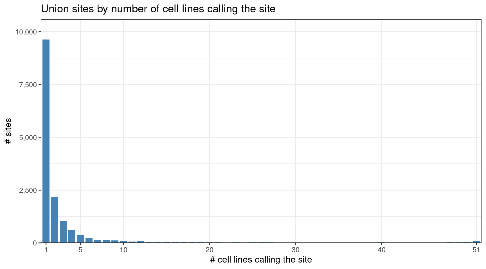
path_BACS_early <- "/project2/xinhe/xsun/pumseq/data_others/pU_PMID39349603.xlsx"
bacs_early <- readxl::read_excel(path_BACS_early, sheet = 6, skip = 2) %>%
filter(feature != "ncRNA") %>%
mutate(chr_num = sub("^chr", "", chr),
pos_num = as.integer(pos),
psi_level = as.numeric(`Ψ level`))
n_bacs_early <- nrow(bacs_early)
rec_table <- do.call(rbind, lapply(ncalled_cutoffs, function(cc) {
idx <- which(global_sites$n_called >= cc$min_cls)
sub <- global_sites[idx, ]
ov <- sub %>% mutate(chr_num = ref) %>%
inner_join(bacs_early, by = c("chr_num", "pos" = "pos_num", "strand"))
r_val <- if (nrow(ov) >= 3) round(cor(ov$ratio, ov$psi_level,
method = "pearson", use = "complete.obs"), 3) else NA
data.frame(
Threshold = cc$label,
Sites = length(idx),
BACS_overlap = nrow(ov),
pct_ours_in_BACS = round(nrow(ov) / length(idx) * 100, 1),
pct_BACS_in_ours = round(nrow(ov) / n_bacs_early * 100, 1),
Pearson_r = r_val
)
}))
knitr::kable(rec_table,
col.names = c("n_called threshold", "# sites", "# BACS overlap",
"% ours in BACS", "% BACS in ours", "Pearson r"),
caption = "BACS overlap and %pU correlation by n_called threshold")| n_called threshold | # sites | # BACS overlap | % ours in BACS | % BACS in ours | Pearson r |
|---|---|---|---|---|---|
| >=1 CL (all) | 15555 | 621 | 4.0 | 48.0 | 0.935 |
| >=2 CLs | 5928 | 510 | 8.6 | 39.4 | 0.936 |
| >=3 CLs | 3745 | 450 | 12.0 | 34.8 | 0.937 |
| >=5 CLs | 2109 | 382 | 18.1 | 29.5 | 0.935 |
| >=10 CLs | 1083 | 277 | 25.6 | 21.4 | 0.932 |
bar_df <- data.frame(
label = sapply(ncalled_cutoffs, `[[`, "label"),
n_sites = sapply(ncalled_cutoffs, function(cc) sum(global_sites$n_called >= cc$min_cls))
)
bar_df$label <- factor(bar_df$label, levels = rev(bar_df$label))
ggplot(bar_df, aes(x = label, y = n_sites)) +
geom_col(fill = "steelblue", width = 0.6) +
geom_text(aes(label = scales::comma(n_sites)), hjust = -0.1, size = 4) +
coord_flip(ylim = c(0, max(bar_df$n_sites) * 1.1)) +
scale_y_continuous(labels = scales::comma) +
labs(title = "Union sites at each n_called threshold",
x = NULL, y = "# sites") +
theme_bw(base_size = 12)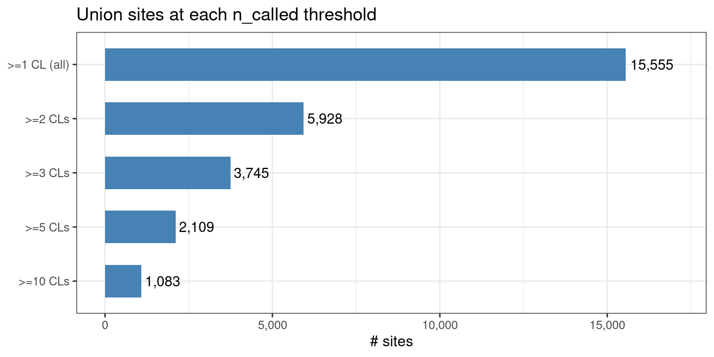
Distribution of the mega-pooled conversion ratio C/(C+T) at each n_called threshold. Red dashed = median; orange dotted = mean.
for (cc in ncalled_cutoffs) {
idx <- which(global_sites$n_called >= cc$min_cls)
n_sub <- length(idx)
cat(sprintf("\n\n### %s\n\n", cc$label))
cat(sprintf("**%s sites**\n\n", scales::comma(n_sub)))
if (n_sub < 10) { cat("Too few sites.\n\n"); next }
sub <- global_sites[idx, ]
med_val <- median(sub$ratio)
mean_val <- mean(sub$ratio)
print(
ggplot(sub, aes(x = ratio)) +
geom_histogram(aes(y = after_stat(density)), binwidth = 0.01,
fill = "steelblue", color = "white", alpha = 0.7) +
geom_density(color = "navy", linewidth = 0.7) +
geom_vline(xintercept = med_val, color = "red", linetype = "dashed") +
geom_vline(xintercept = mean_val, color = "darkorange", linetype = "dotted") +
annotate("text", x = Inf, y = Inf,
label = sprintf("n = %s\nmedian = %.3f\nmean = %.3f",
scales::comma(n_sub), med_val, mean_val),
hjust = 1.05, vjust = 1.05, size = 4, family = "mono") +
labs(title = sprintf("Pooled %%pU distribution (%s)", cc$label),
x = "%pU (C/(C+T), mega-pooled)", y = "Density") +
theme_bw(base_size = 12)
)
cat("\n\n")
}15,555 sites
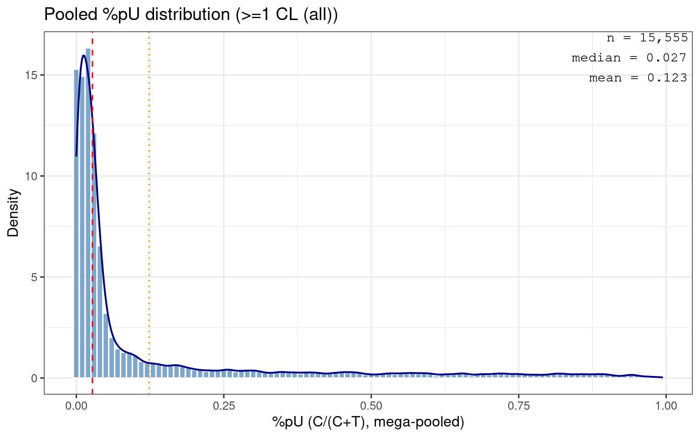
5,928 sites
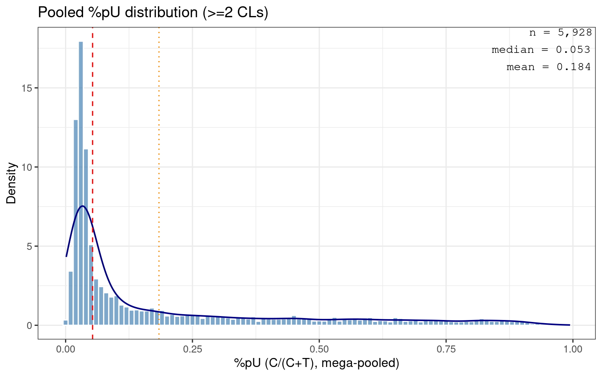
3,745 sites
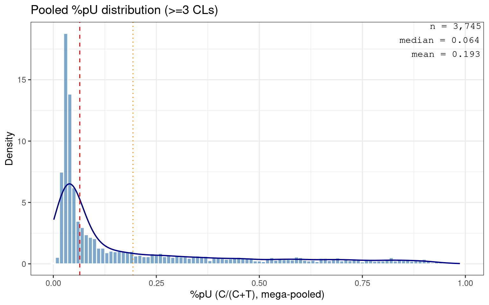
2,109 sites
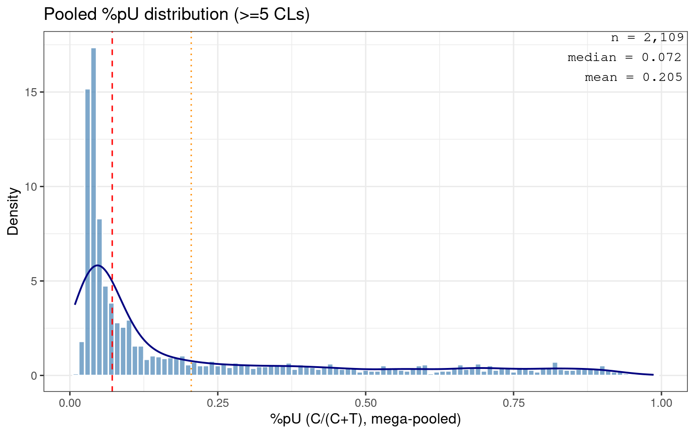
1,083 sites
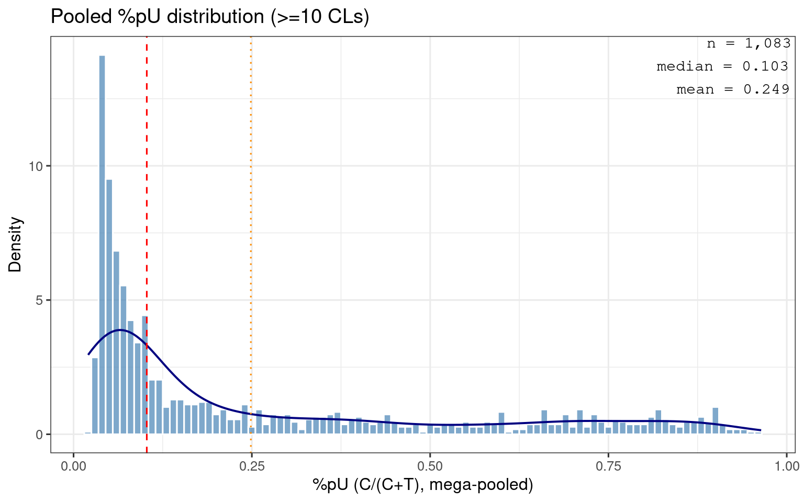
ratio_only <- as.matrix(ratio_mat[, ..CL_NAMES])
depth_only <- as.matrix(depth_mat[, ..CL_NAMES])for (cc in ncalled_cutoffs) {
idx <- which(global_sites$n_called >= cc$min_cls)
n_sub <- length(idx)
cat(sprintf("\n\n### %s\n\n", cc$label))
cat(sprintf("**%s sites**\n\n", scales::comma(n_sub)))
if (n_sub == 0) { cat("No sites.\n\n"); next }
sub_ratio <- ratio_only[idx, , drop = FALSE]
cov_df <- data.frame(
cell_line = CL_NAMES,
pct_covered = round(colSums(!is.na(sub_ratio)) / n_sub * 100, 1)
)
cov_df$cell_line <- factor(cov_df$cell_line, levels = CL_NAMES)
n_per <- ceiling(nrow(cov_df) / 5)
cov_df$panel <- rep(1:5, each = n_per, length.out = nrow(cov_df))
cov_plots <- lapply(1:5, function(p) {
sub <- cov_df[cov_df$panel == p, ]
ggplot(sub, aes(x = cell_line, y = pct_covered, fill = cell_line)) +
geom_col(width = 0.6, show.legend = FALSE) +
geom_text(aes(label = sprintf("%.0f%%", pct_covered)), vjust = -0.3, size = 2.5) +
scale_y_continuous(limits = c(0, 105)) +
labs(x = NULL, y = "% covered") +
theme_bw(base_size = 9) +
theme(axis.text.x = element_text(angle = 45, hjust = 1, size = 7))
})
print(
wrap_plots(cov_plots, ncol = 1) +
plot_annotation(title = sprintf("Coverage (%s)", cc$label),
subtitle = sprintf("%s sites", scales::comma(n_sub)))
)
cat("\n\n")
}15,555 sites
5,928 sites
3,745 sites
2,109 sites
1,083 sites
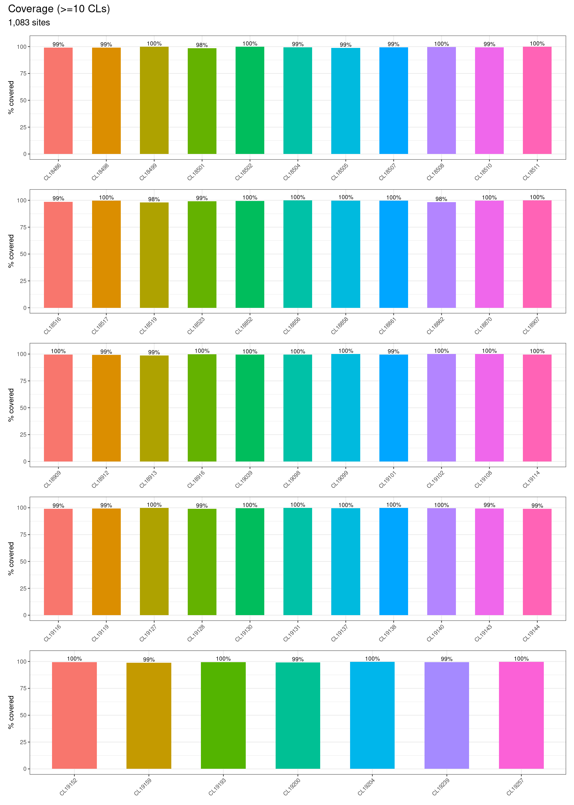
for (cc in ncalled_cutoffs) {
idx <- which(global_sites$n_called >= cc$min_cls)
n_sub <- length(idx)
cat(sprintf("\n\n## %s\n\n", cc$label))
cat(sprintf("**%s sites**\n\n", scales::comma(n_sub)))
if (n_sub < 10) { cat("Too few sites.\n\n"); next }
sub_ratio <- ratio_only[idx, , drop = FALSE]
cor_mat <- cor(sub_ratio, use = "pairwise.complete.obs", method = "pearson")
corrplot(cor_mat, method = "color", type = "lower",
tl.cex = 0.5, tl.col = "black", cl.cex = 0.7,
title = sprintf("Pearson r (%s, n=%s)", cc$label, scales::comma(n_sub)),
mar = c(0, 0, 2, 0))
upper_tri <- cor_mat[upper.tri(cor_mat)]
print(
ggplot(data.frame(r = upper_tri), aes(x = r)) +
geom_histogram(binwidth = 0.01, fill = "steelblue", color = "white", alpha = 0.8) +
geom_vline(xintercept = median(upper_tri, na.rm = TRUE),
color = "red", linetype = "dashed") +
annotate("text", x = median(upper_tri, na.rm = TRUE), y = Inf,
label = sprintf("median = %.3f", median(upper_tri, na.rm = TRUE)),
hjust = -0.1, vjust = 1.5, size = 4) +
labs(title = sprintf("Pairwise r distribution (%s)", cc$label),
x = "Pearson r", y = "Count") +
theme_bw(base_size = 12)
)
cat("\n\n")
}15,555 sites
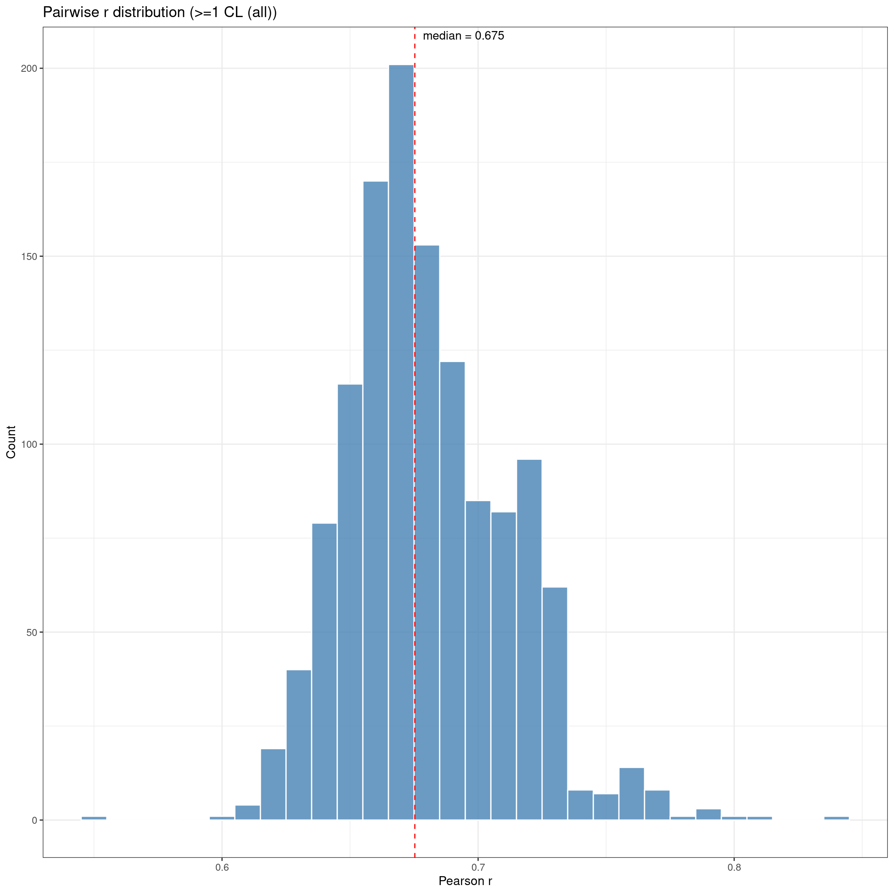
5,928 sites
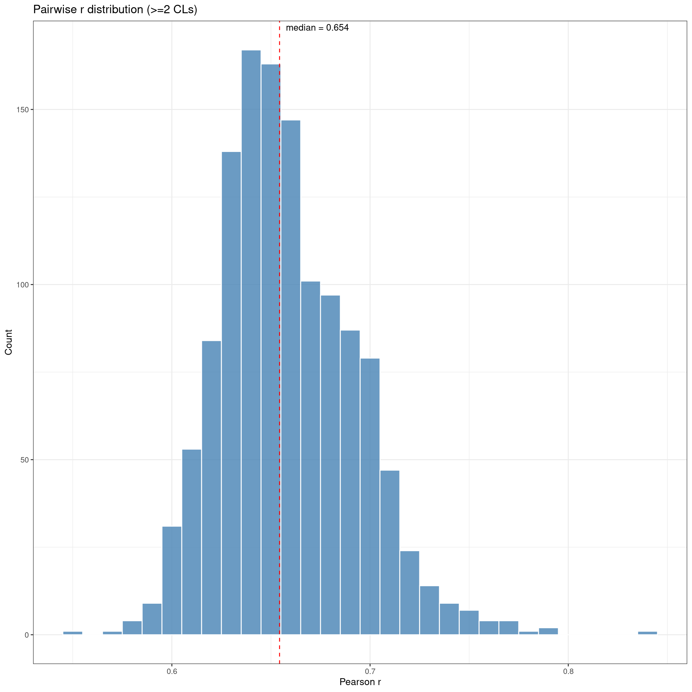
3,745 sites
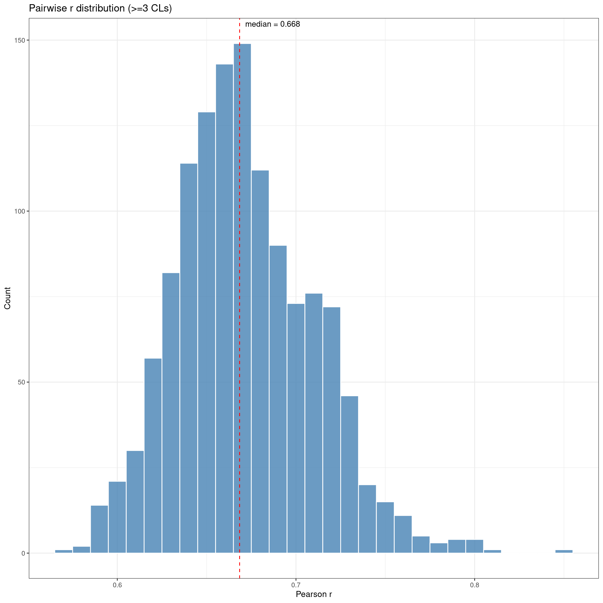
2,109 sites
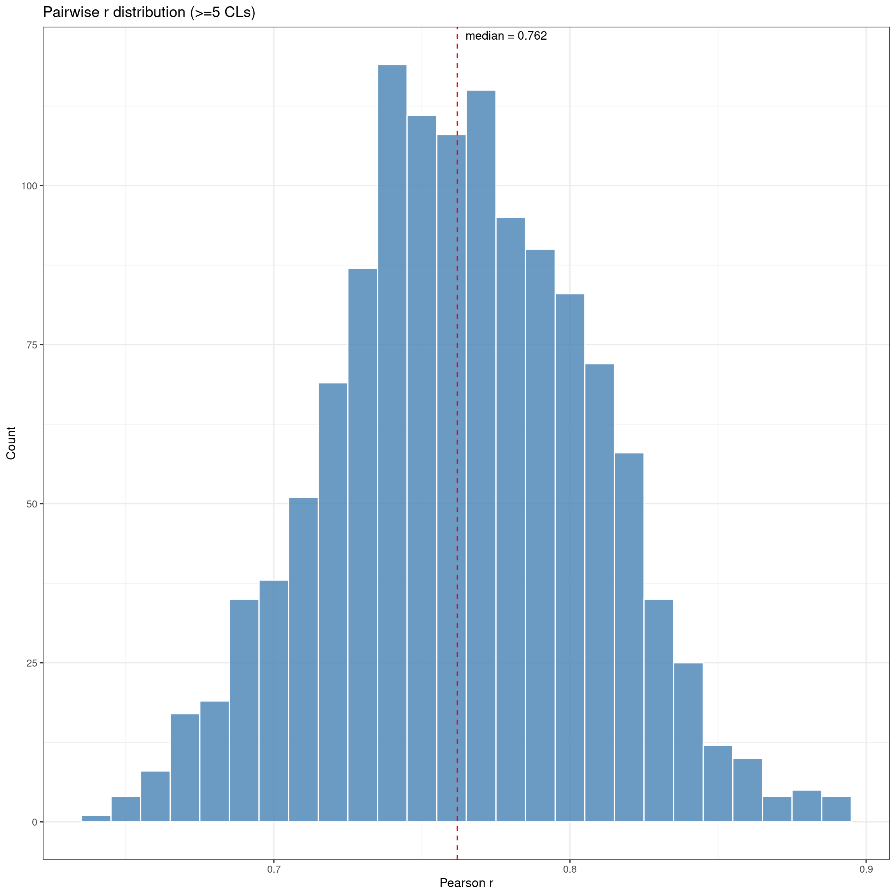
1,083 sites
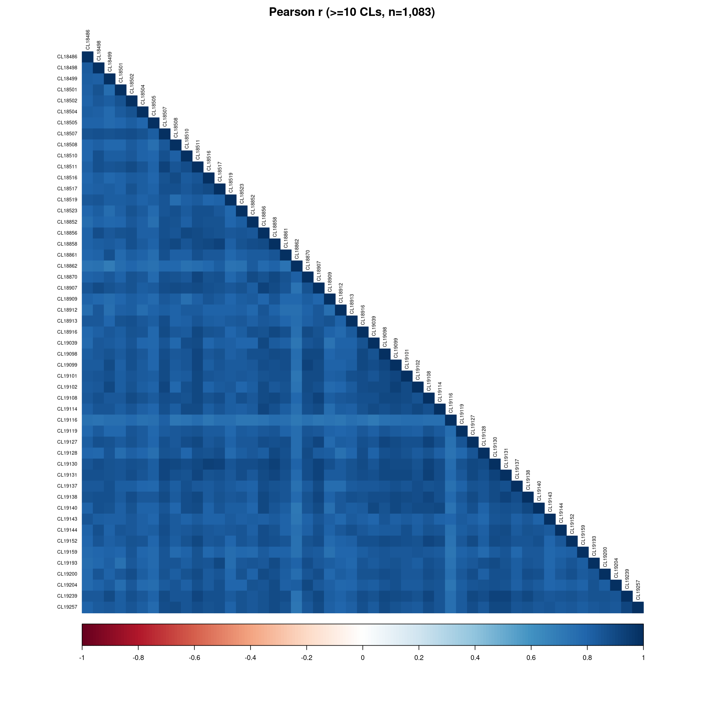
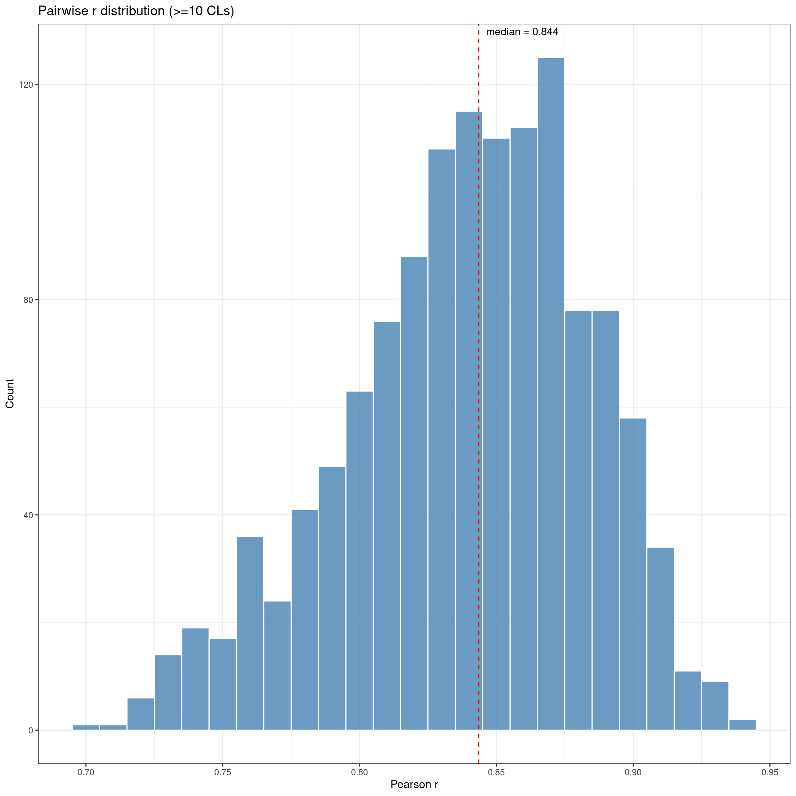
path_BACS <- "/project2/xinhe/xsun/pumseq/data_others/pU_PMID39349603.xlsx"
bacs_mRNA <- readxl::read_excel(path_BACS, sheet = 6, skip = 2) %>%
filter(feature != "ncRNA") %>%
mutate(chr_num = sub("^chr", "", chr),
pos_num = as.integer(pos),
psi_level = as.numeric(`Ψ level`))
n_bacs <- nrow(bacs_mRNA)
cat("BACS mRNA sites:", n_bacs, "\n")BACS mRNA sites: 1294 for (cc in ncalled_cutoffs) {
idx <- which(global_sites$n_called >= cc$min_cls)
n_sub <- length(idx)
cat(sprintf("\n\n## %s\n\n", cc$label))
sub <- global_sites[idx, ]
ov <- sub %>% mutate(chr_num = ref) %>%
inner_join(bacs_mRNA, by = c("chr_num", "pos" = "pos_num", "strand"))
cat(sprintf("Our sites: **%s** | BACS sites: **%s** | Overlap: **%d** (%.1f%% of ours, %.1f%% of BACS)\n\n",
scales::comma(n_sub), scales::comma(n_bacs), nrow(ov),
nrow(ov)/n_sub*100, nrow(ov)/n_bacs*100))
if (nrow(ov) >= 3) {
r_val <- cor(ov$ratio, ov$psi_level, method = "pearson", use = "complete.obs")
print(
ggplot(ov, aes(x = ratio, y = psi_level)) +
geom_point(alpha = 0.4, size = 1.5, color = "#2c7bb6") +
geom_smooth(method = "lm", se = TRUE, color = "grey40", linetype = "dashed") +
annotate("text", x = -Inf, y = Inf,
label = sprintf("r = %.3f\nn = %d", r_val, nrow(ov)),
hjust = -0.1, vjust = 1.3, size = 4) +
labs(title = sprintf("vs BACS (%s)", cc$label),
x = "Our %pU (mega-pooled)", y = "BACS Ψ level") +
theme_bw(base_size = 12)
)
}
cat("\n\n")
}Our sites: 15,555 | BACS sites: 1,294 | Overlap: 621 (4.0% of ours, 48.0% of BACS)
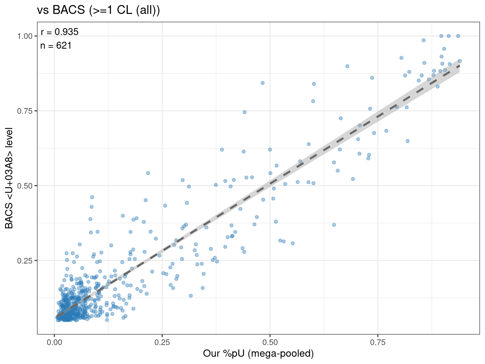
Our sites: 5,928 | BACS sites: 1,294 | Overlap: 510 (8.6% of ours, 39.4% of BACS)
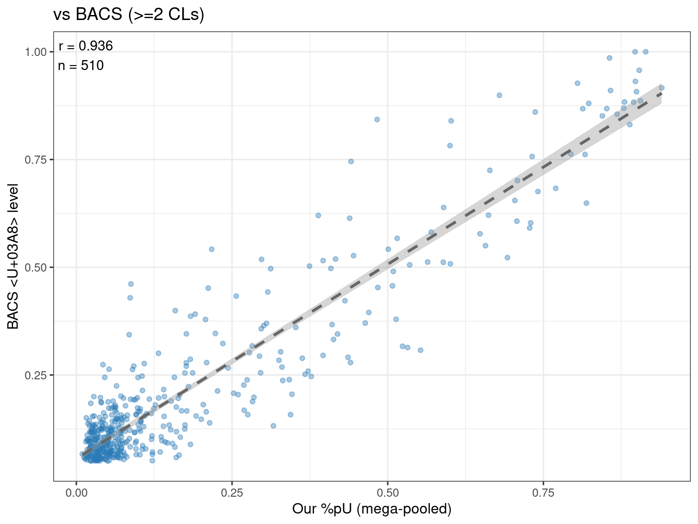
Our sites: 3,745 | BACS sites: 1,294 | Overlap: 450 (12.0% of ours, 34.8% of BACS)
Our sites: 2,109 | BACS sites: 1,294 | Overlap: 382 (18.1% of ours, 29.5% of BACS)
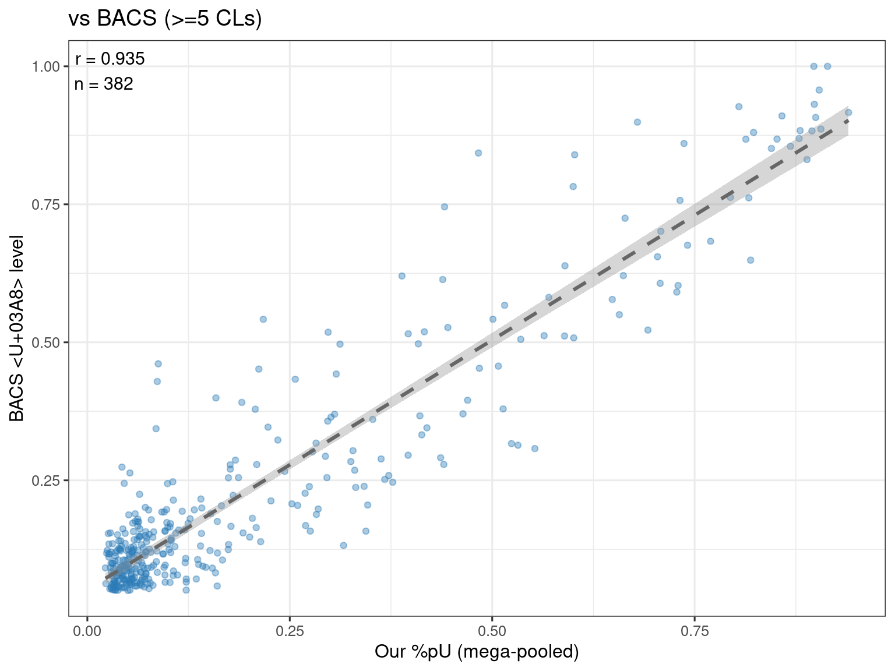
Our sites: 1,083 | BACS sites: 1,294 | Overlap: 277 (25.6% of ours, 21.4% of BACS)
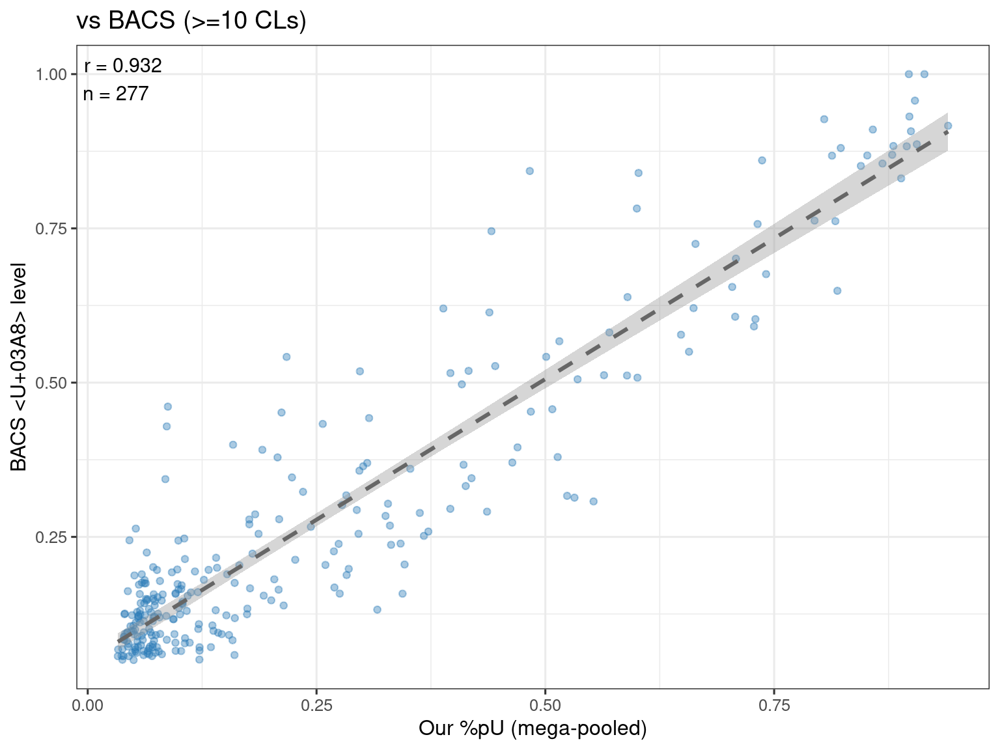
bacs_summary <- do.call(rbind, lapply(ncalled_cutoffs, function(cc) {
idx <- which(global_sites$n_called >= cc$min_cls)
sub <- global_sites[idx, ]
ov <- sub %>% mutate(chr_num = ref) %>%
inner_join(bacs_mRNA, by = c("chr_num", "pos" = "pos_num", "strand"))
r_val <- if (nrow(ov) >= 3) round(cor(ov$ratio, ov$psi_level,
method = "pearson", use = "complete.obs"), 3) else NA
data.frame(
Threshold = cc$label,
Sites = length(idx),
BACS_overlap = nrow(ov),
pct_ours_in_BACS = round(nrow(ov)/length(idx)*100, 1),
pct_BACS_in_ours = round(nrow(ov)/n_bacs*100, 1),
Pearson_r = r_val
)
}))
knitr::kable(bacs_summary,
col.names = c("n_called threshold", "# sites", "# overlap",
"% ours in BACS", "% BACS in ours", "Pearson r"),
caption = "BACS overlap at each n_called threshold")| n_called threshold | # sites | # overlap | % ours in BACS | % BACS in ours | Pearson r |
|---|---|---|---|---|---|
| >=1 CL (all) | 15555 | 621 | 4.0 | 48.0 | 0.935 |
| >=2 CLs | 5928 | 510 | 8.6 | 39.4 | 0.936 |
| >=3 CLs | 3745 | 450 | 12.0 | 34.8 | 0.937 |
| >=5 CLs | 2109 | 382 | 18.1 | 29.5 | 0.935 |
| >=10 CLs | 1083 | 277 | 25.6 | 21.4 | 0.932 |
We extract ±10 bp flanking sequences around each union pU site from the reference genome, then compute position-specific nucleotide frequencies.
Known mRNA pseudouridine motifs:
library(Biostrings)
library(reshape2)
genome_fasta <- "/project/xinhe/xsun/data/genome_reference/Reference/Human/ensembl.v112/fasta/dna/Homo_sapiens.GRCh38.dna.primary_assembly.fa"
bed_file <- file.path(OUT_DIR, "union_mRNA.pseusite.bed")
flank <- 10
genome <- readDNAStringSet(genome_fasta)
names(genome) <- sub(" .*", "", names(genome))
bed <- fread(bed_file, header = FALSE, sep = "\t",
col.names = c("chr", "start", "end", "name", "score", "strand"))seqs <- character(nrow(bed))
valid <- logical(nrow(bed))
for (i in seq_len(nrow(bed))) {
chr <- bed$chr[i]
center <- bed$end[i]
st <- bed$strand[i]
if (!chr %in% names(genome)) next
chr_len <- length(genome[[chr]])
left <- center - flank
right <- center + flank
if (left < 1 || right > chr_len) next
s <- subseq(genome[[chr]], start = left, end = right)
if (st == "-") s <- reverseComplement(s)
seqs[i] <- as.character(s)
valid[i] <- TRUE
}
valid_indices <- which(valid)
seqs <- seqs[valid]
cat("Valid sequences:", length(seqs), "out of", nrow(bed), "\n")Valid sequences: 15555 out of 15555 seq_width <- 2 * flank + 1
positions <- (-flank):flank
base_order <- c("A", "C", "G", "T")
dna_seqs <- DNAStringSet(seqs)
center_idx <- flank + 1
motif_9mer_char <- as.character(subseq(dna_seqs, start = center_idx - 2, end = center_idx + 6))
classify_pus <- function(mer9) {
b <- strsplit(mer9, "")[[1]]
if (b[1] == "T" && b[2] == "G" && b[4] == "A" && b[5] %in% c("A", "G")) return("PUS7")
if (b[1] == "G" && b[2] == "T" && b[4] == "C" && b[6] == "A" && b[9] == "C") return("TRUB1")
return("Other")
}
classes <- sapply(motif_9mer_char, classify_pus, USE.NAMES = FALSE)for (cc in ncalled_cutoffs) {
site_idx <- which(global_sites$n_called >= cc$min_cls)
use_idx <- intersect(site_idx, valid_indices)
seq_pos <- match(use_idx, valid_indices)
sub_seqs <- seqs[seq_pos]
n_sub <- length(sub_seqs)
cat(sprintf("\n\n### %s\n\n", cc$label))
cat(sprintf("**%s sites**\n\n", scales::comma(n_sub)))
if (n_sub < 10) { cat("Too few sites.\n\n"); next }
freq_mat <- matrix(0, nrow = 4, ncol = seq_width,
dimnames = list(base_order, positions))
for (s in sub_seqs) {
bases <- strsplit(s, "")[[1]]
for (j in seq_along(bases)) {
b <- toupper(bases[j])
if (b %in% base_order) freq_mat[b, j] <- freq_mat[b, j] + 1
}
}
freq_pct <- sweep(freq_mat, 2, colSums(freq_mat), "/") * 100
plot_df <- melt(freq_pct)
colnames(plot_df) <- c("Base", "Position", "Frequency")
plot_df$Position <- as.integer(as.character(plot_df$Position))
plot_df$Base <- factor(plot_df$Base, levels = base_order)
print(
ggplot(plot_df, aes(x = Position, y = Base, fill = Frequency)) +
geom_tile(color = "white", linewidth = 0.3) +
geom_text(aes(label = sprintf("%.0f", Frequency)), size = 2.5) +
scale_fill_gradient2(low = "white", mid = "#ffffbf", high = "#d73027",
midpoint = 25, name = "% frequency") +
scale_x_continuous(breaks = positions) +
geom_vline(xintercept = 0, color = "black", linewidth = 0.8, linetype = "dashed") +
labs(title = sprintf("Nucleotide frequency (%s, n = %s)", cc$label, scales::comma(n_sub)),
subtitle = sprintf("Position 0 = pU site (T→Ψ), ±%d bp flanking", flank),
x = "Position relative to pU site", y = NULL) +
theme_bw(base_size = 11) +
theme(panel.grid = element_blank())
)
cat("\n\n")
print(
ggplot(plot_df, aes(x = factor(Position, levels = positions), y = Frequency, fill = Base)) +
geom_col(position = "stack") +
scale_fill_manual(values = c("A" = "#4DAF4A", "C" = "#377EB8",
"G" = "#FF7F00", "T" = "#E41A1C")) +
geom_vline(xintercept = which(positions == 0), color = "black",
linewidth = 0.8, linetype = "dashed") +
labs(title = sprintf("Nucleotide composition (%s, n = %s)", cc$label, scales::comma(n_sub)),
subtitle = sprintf("Position 0 = pU site (T→Ψ), ±%d bp flanking", flank),
x = "Position relative to pU site", y = "% frequency") +
theme_bw(base_size = 11) +
theme(axis.text.x = element_text(size = 7))
)
cat("\n\n")
}15,555 sites
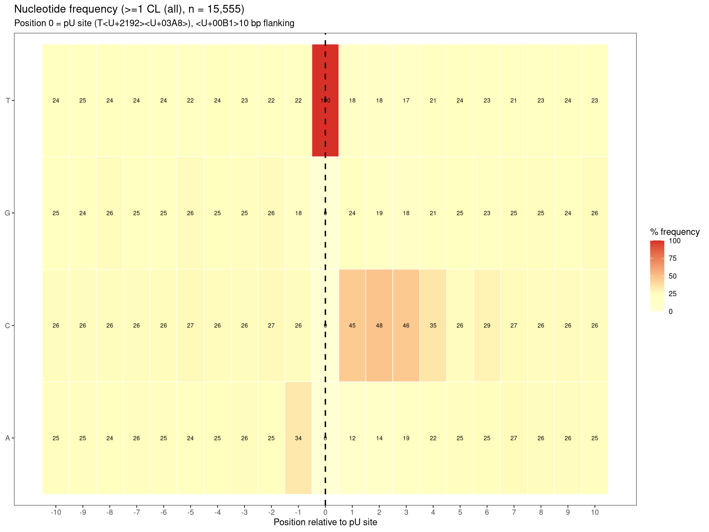
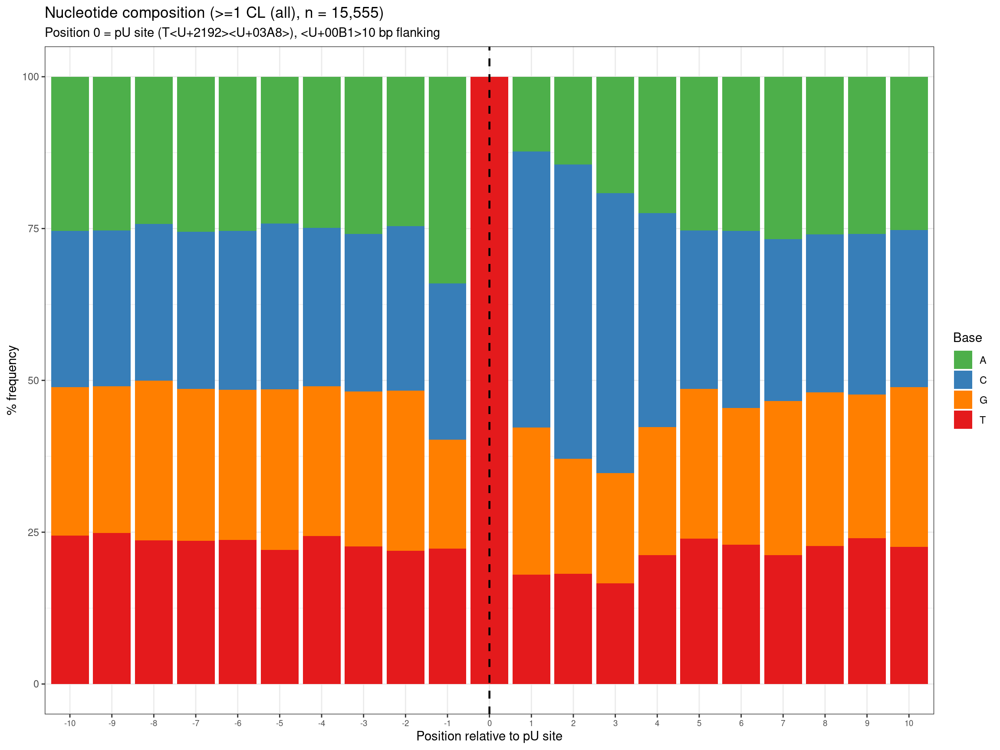
5,928 sites
3,745 sites
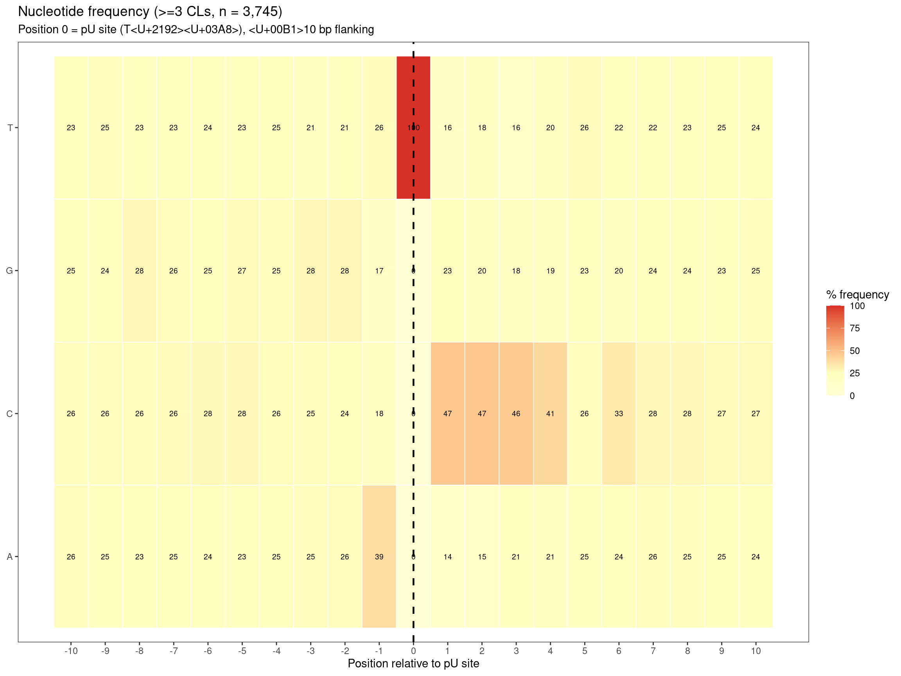
2,109 sites
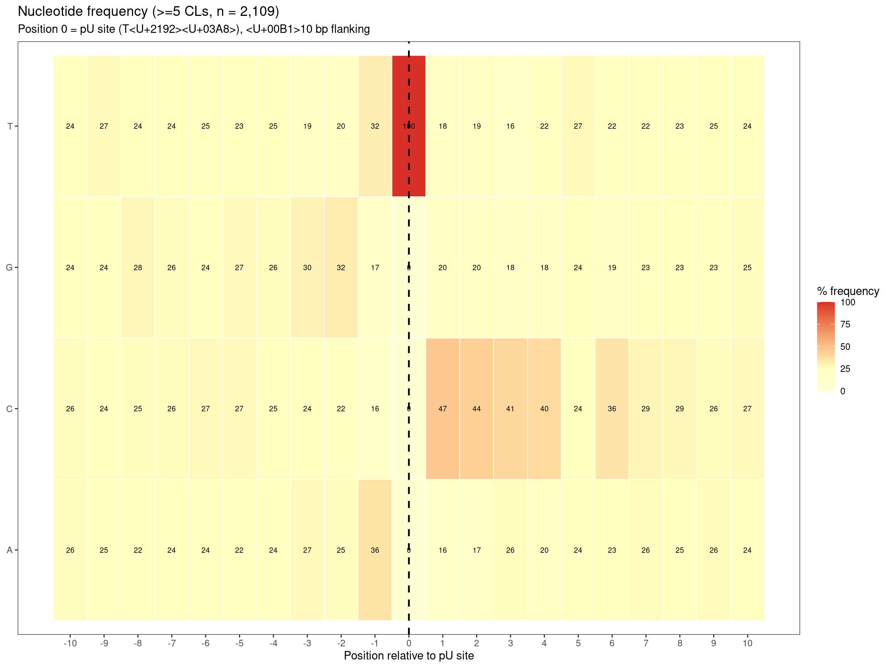
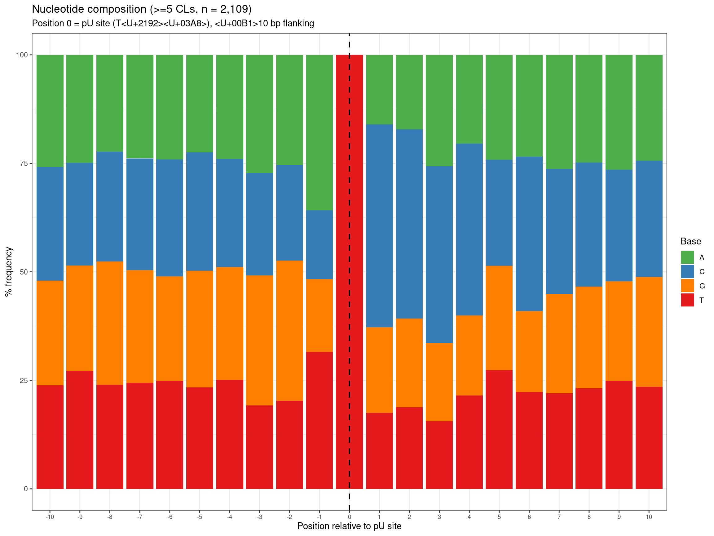
1,083 sites
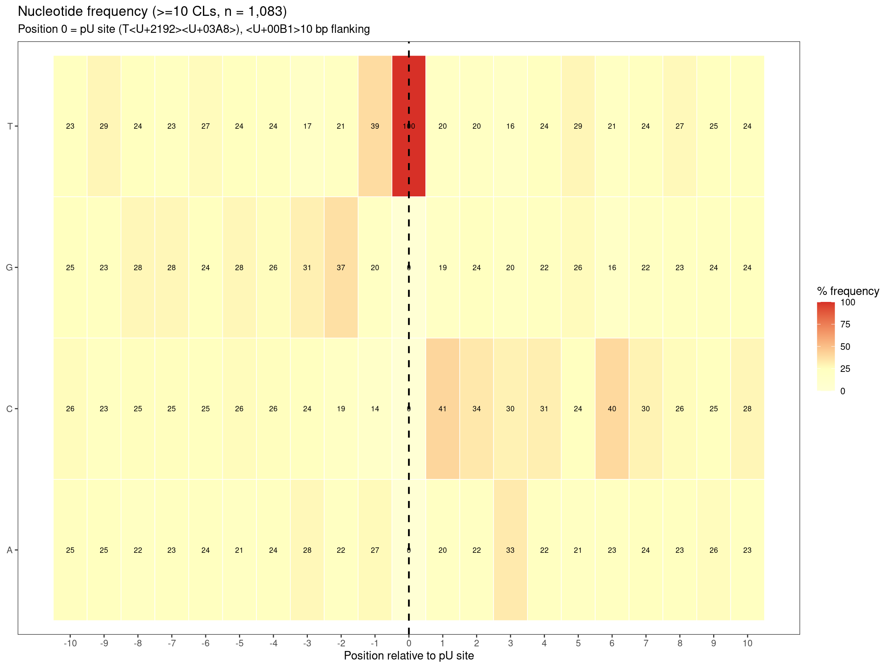
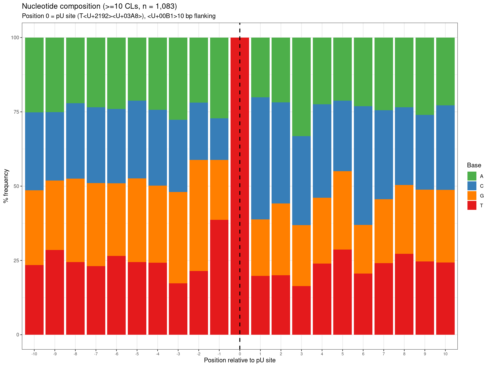
make_class_heatmap <- function(class_seqs, class_name) {
n <- length(class_seqs)
if (n == 0) return(NULL)
fm <- matrix(0, nrow = 4, ncol = seq_width,
dimnames = list(base_order, positions))
for (s in class_seqs) {
bases <- strsplit(s, "")[[1]]
for (j in seq_along(bases)) {
b <- toupper(bases[j])
if (b %in% base_order) fm[b, j] <- fm[b, j] + 1
}
}
fp <- sweep(fm, 2, colSums(fm), "/") * 100
pd <- melt(fp)
colnames(pd) <- c("Base", "Position", "Frequency")
pd$Position <- as.integer(as.character(pd$Position))
pd$Base <- factor(pd$Base, levels = base_order)
ggplot(pd, aes(x = Position, y = Base, fill = Frequency)) +
geom_tile(color = "white", linewidth = 0.3) +
geom_text(aes(label = sprintf("%.0f", Frequency)), size = 2) +
scale_fill_gradient2(low = "white", mid = "#ffffbf", high = "#d73027",
midpoint = 25, name = "% freq") +
scale_x_continuous(breaks = positions) +
geom_vline(xintercept = 0, color = "black", linewidth = 0.8, linetype = "dashed") +
labs(title = sprintf("%s sites (n = %d)", class_name, n),
x = "Position relative to pU site", y = NULL) +
theme_bw(base_size = 9) +
theme(panel.grid = element_blank())
}
for (cc in ncalled_cutoffs) {
site_idx <- which(global_sites$n_called >= cc$min_cls)
use_idx <- intersect(site_idx, valid_indices)
seq_pos <- match(use_idx, valid_indices)
sub_seqs <- seqs[seq_pos]
sub_9mer <- motif_9mer_char[seq_pos]
sub_classes <- sapply(sub_9mer, classify_pus, USE.NAMES = FALSE)
n_sub <- length(sub_seqs)
cat(sprintf("\n\n### %s\n\n", cc$label))
cat(sprintf("**%s sites**\n\n", scales::comma(n_sub)))
class_tab <- table(sub_classes)
class_df <- data.frame(
Enzyme = names(class_tab),
Count = as.integer(class_tab),
Pct = round(as.integer(class_tab) / n_sub * 100, 1)
)
class_df <- class_df[order(-class_df$Count), ]
print(knitr::kable(class_df, row.names = FALSE,
col.names = c("Enzyme class", "# sites", "%"),
caption = sprintf("PUS classification (%s)", cc$label)))
cat("\n\n")
class_df$label <- sprintf("%s\n%d (%.0f%%)", class_df$Enzyme, class_df$Count, class_df$Pct)
print(
ggplot(class_df, aes(x = "", y = Count, fill = Enzyme)) +
geom_col(width = 1, color = "white") +
coord_polar(theta = "y") +
geom_text(aes(label = label),
position = position_stack(vjust = 0.5), size = 4) +
scale_fill_manual(values = c("TRUB1" = "#377EB8", "PUS7" = "#FF7F00",
"Other" = "#999999")) +
labs(title = sprintf("PUS classification (%s, n = %s)", cc$label, scales::comma(n_sub)),
fill = NULL) +
theme_void(base_size = 12)
)
cat("\n\n")
hm_plots <- Filter(Negate(is.null), list(
make_class_heatmap(sub_seqs[sub_classes == "TRUB1"], "TRUB1"),
make_class_heatmap(sub_seqs[sub_classes == "PUS7"], "PUS7"),
make_class_heatmap(sub_seqs[sub_classes == "Other"], "Other")
))
if (length(hm_plots) > 0) print(wrap_plots(hm_plots, ncol = 1))
cat("\n\n")
}15,555 sites
| Enzyme class | # sites | % |
|---|---|---|
| Other | 15009 | 96.5 |
| PUS7 | 278 | 1.8 |
| TRUB1 | 268 | 1.7 |
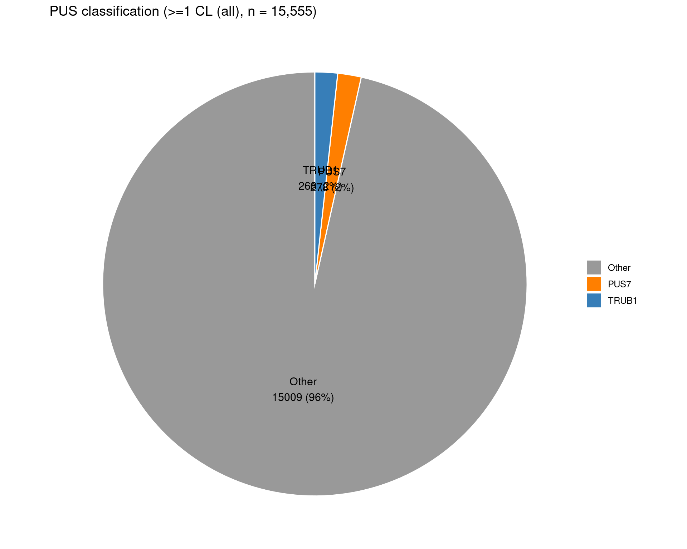
5,928 sites
| Enzyme class | # sites | % |
|---|---|---|
| Other | 5575 | 94.0 |
| TRUB1 | 217 | 3.7 |
| PUS7 | 136 | 2.3 |
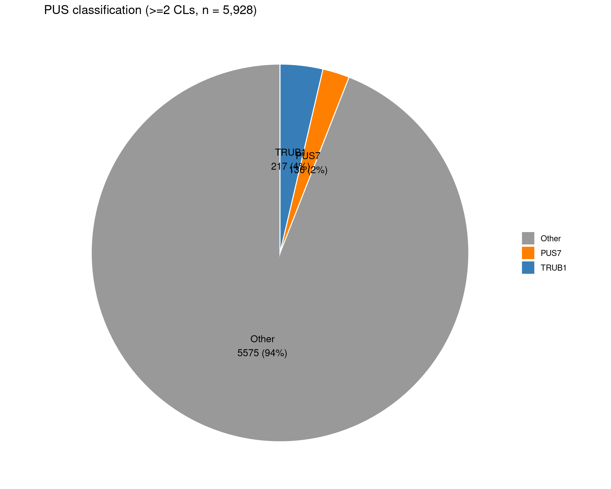
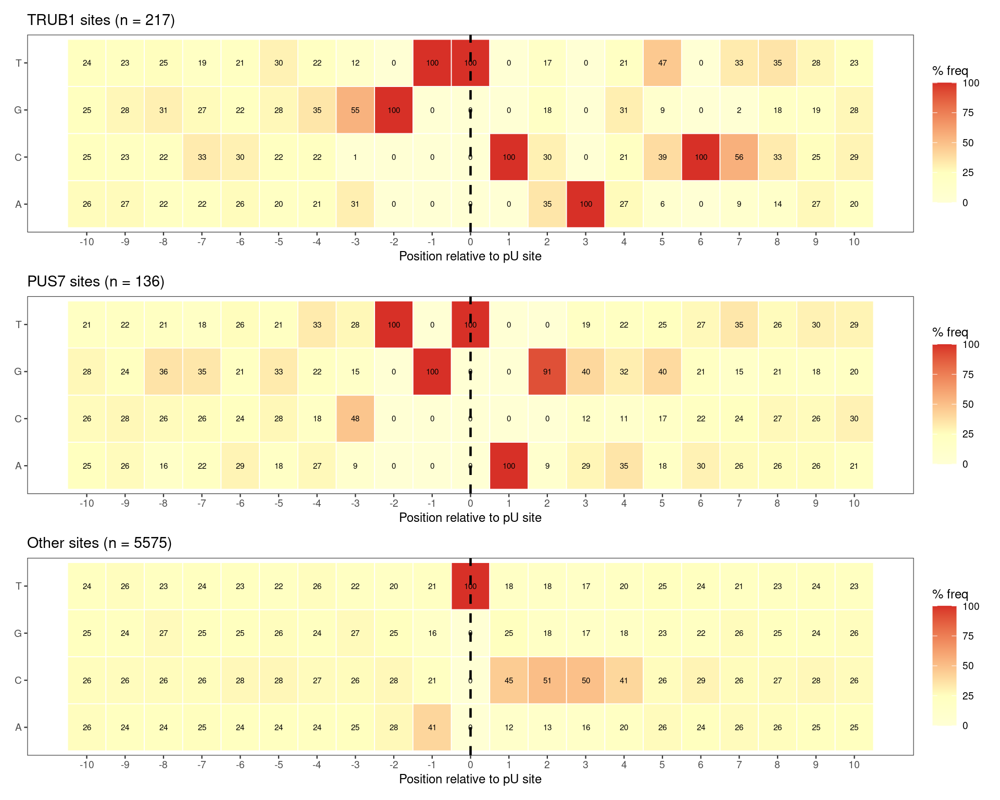
3,745 sites
| Enzyme class | # sites | % |
|---|---|---|
| Other | 3438 | 91.8 |
| TRUB1 | 198 | 5.3 |
| PUS7 | 109 | 2.9 |
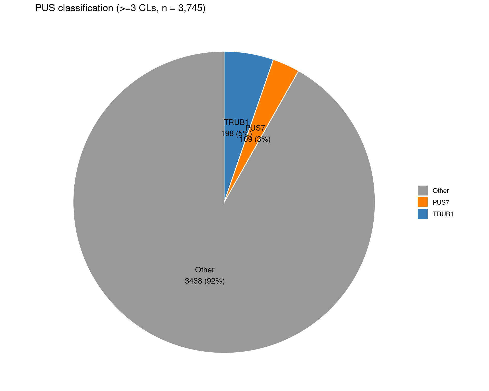
2,109 sites
| Enzyme class | # sites | % |
|---|---|---|
| Other | 1864 | 88.4 |
| TRUB1 | 173 | 8.2 |
| PUS7 | 72 | 3.4 |
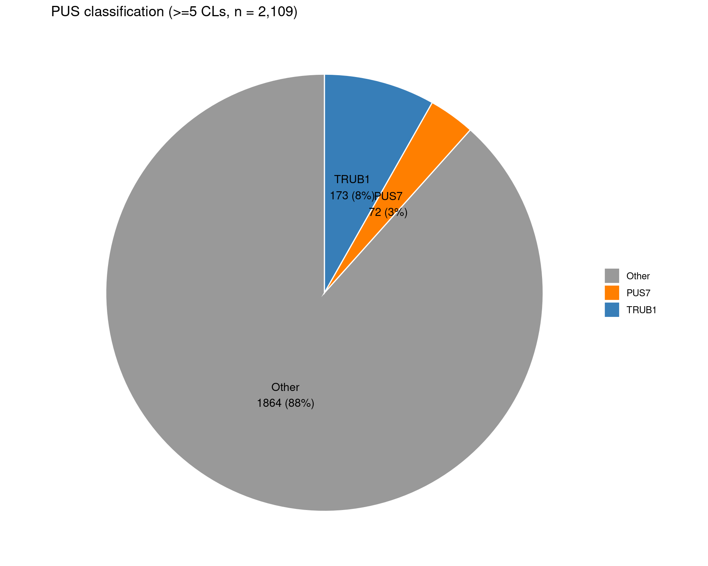
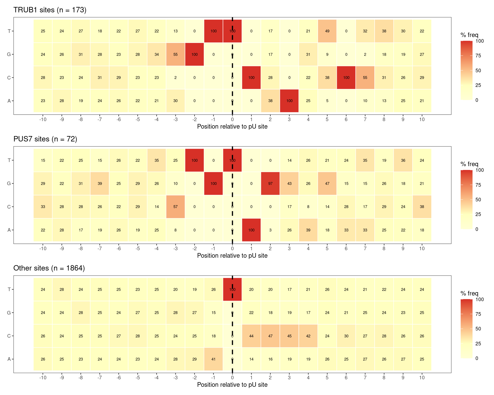
1,083 sites
| Enzyme class | # sites | % |
|---|---|---|
| Other | 893 | 82.5 |
| TRUB1 | 137 | 12.7 |
| PUS7 | 53 | 4.9 |
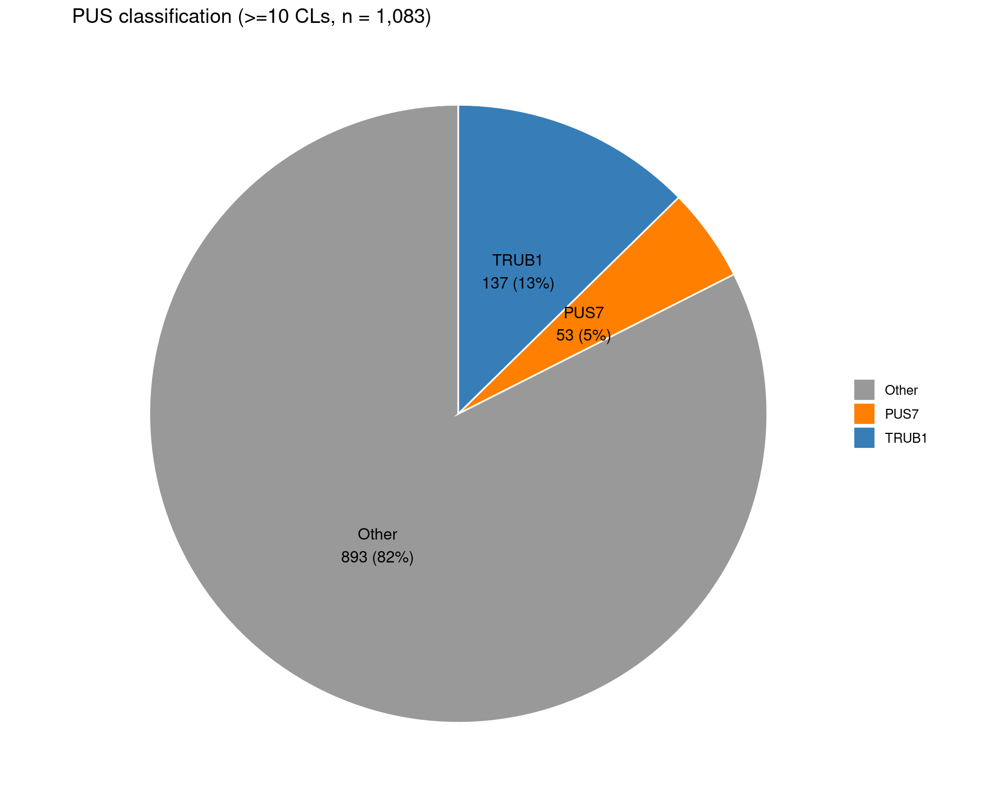
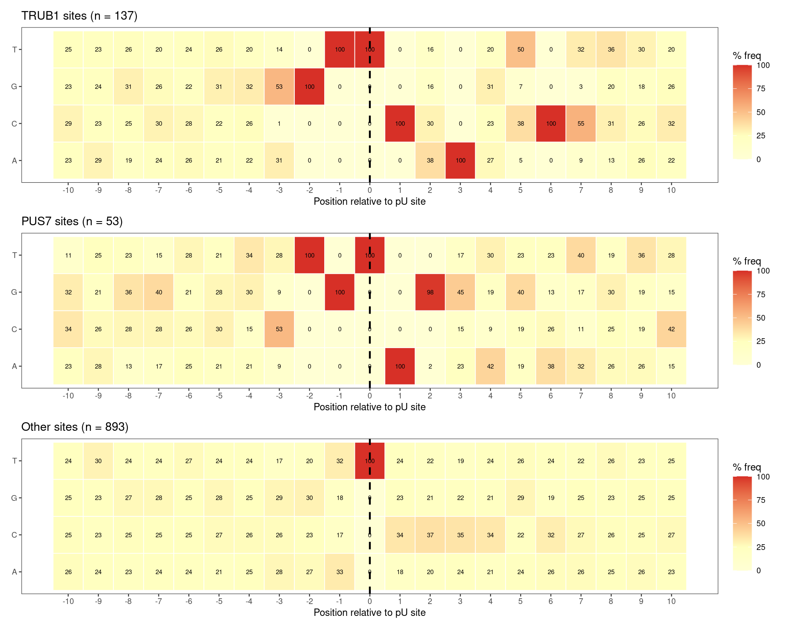
for (cc in ncalled_cutoffs) {
site_idx <- which(global_sites$n_called >= cc$min_cls)
use_idx <- intersect(site_idx, valid_indices)
seq_pos <- match(use_idx, valid_indices)
sub_9mer <- motif_9mer_char[seq_pos]
sub_classes <- sapply(sub_9mer, classify_pus, USE.NAMES = FALSE)
n_sub <- length(use_idx)
cat(sprintf("\n\n### %s\n\n", cc$label))
cat(sprintf("**%s sites**\n\n", scales::comma(n_sub)))
if (n_sub < 20) { cat("Too few sites.\n\n"); next }
sub_global <- global_sites[use_idx, ]
strength_df <- data.frame(
ratio = sub_global$ratio,
class = sub_classes,
is_known = sub_classes %in% c("TRUB1", "PUS7")
)
strength_df$quartile <- cut(strength_df$ratio,
breaks = quantile(strength_df$ratio, probs = c(0,.25,.5,.75,1)),
include.lowest = TRUE,
labels = c("Q1 (weakest)", "Q2", "Q3", "Q4 (strongest)"))
q_summary <- strength_df %>%
group_by(quartile, class) %>%
summarise(n = n(), .groups = "drop") %>%
group_by(quartile) %>%
mutate(pct = round(n / sum(n) * 100, 1))
print(
ggplot(q_summary, aes(x = quartile, y = pct, fill = class)) +
geom_col(position = "stack") +
geom_text(aes(label = sprintf("%.0f%%", pct)),
position = position_stack(vjust = 0.5), size = 3) +
scale_fill_manual(values = c("TRUB1" = "#377EB8", "PUS7" = "#FF7F00",
"Other" = "#999999")) +
labs(title = sprintf("PUS motif by %%pU quartile (%s)", cc$label),
x = "%pU quartile", y = "% of sites", fill = "Enzyme class") +
theme_bw(base_size = 12)
)
cat("\n\n")
q_known <- strength_df %>%
group_by(quartile) %>%
summarise(
n_sites = n(),
n_TRUB1 = sum(class == "TRUB1"),
pct_TRUB1 = round(sum(class == "TRUB1") / n() * 100, 1),
n_PUS7 = sum(class == "PUS7"),
pct_PUS7 = round(sum(class == "PUS7") / n() * 100, 1),
n_known = sum(is_known),
pct_known = round(sum(is_known) / n() * 100, 1),
median_pU = round(median(ratio), 3),
.groups = "drop"
)
print(knitr::kable(q_known,
col.names = c("Quartile", "# sites", "# TRUB1", "% TRUB1",
"# PUS7", "% PUS7", "# known motif", "% known motif",
"Median %pU"),
caption = sprintf("PUS motif enrichment (%s)", cc$label)))
cat("\n\n")
}15,555 sites
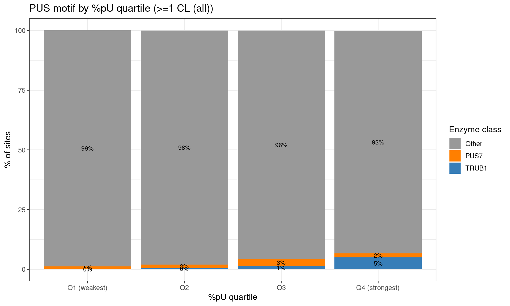
| Quartile | # sites | # TRUB1 | % TRUB1 | # PUS7 | % PUS7 | # known motif | % known motif | Median %pU |
|---|---|---|---|---|---|---|---|---|
| Q1 (weakest) | 3889 | 2 | 0.1 | 42 | 1.1 | 44 | 1.1 | 0.004 |
| Q2 | 3889 | 14 | 0.4 | 63 | 1.6 | 77 | 2.0 | 0.019 |
| Q3 | 3888 | 56 | 1.4 | 109 | 2.8 | 165 | 4.2 | 0.040 |
| Q4 (strongest) | 3889 | 196 | 5.0 | 64 | 1.6 | 260 | 6.7 | 0.365 |
5,928 sites
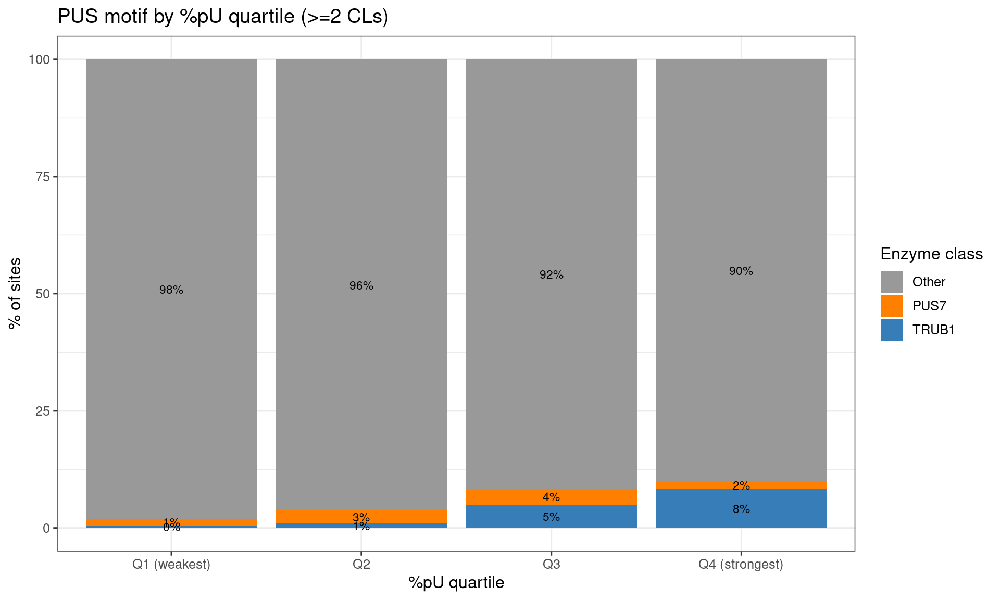
| Quartile | # sites | # TRUB1 | % TRUB1 | # PUS7 | % PUS7 | # known motif | % known motif | Median %pU |
|---|---|---|---|---|---|---|---|---|
| Q1 (weakest) | 1482 | 7 | 0.5 | 21 | 1.4 | 28 | 1.9 | 0.023 |
| Q2 | 1482 | 15 | 1.0 | 40 | 2.7 | 55 | 3.7 | 0.037 |
| Q3 | 1482 | 72 | 4.9 | 52 | 3.5 | 124 | 8.4 | 0.108 |
| Q4 (strongest) | 1482 | 123 | 8.3 | 23 | 1.6 | 146 | 9.9 | 0.534 |
3,745 sites
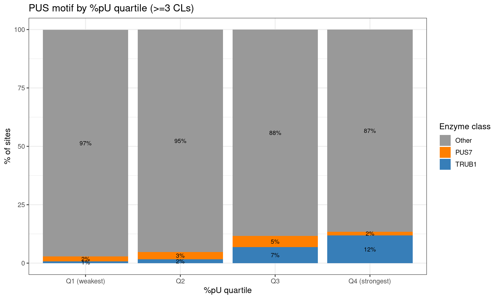
| Quartile | # sites | # TRUB1 | % TRUB1 | # PUS7 | % PUS7 | # known motif | % known motif | Median %pU |
|---|---|---|---|---|---|---|---|---|
| Q1 (weakest) | 937 | 7 | 0.7 | 21 | 2.2 | 28 | 3.0 | 0.028 |
| Q2 | 936 | 15 | 1.6 | 30 | 3.2 | 45 | 4.8 | 0.042 |
| Q3 | 936 | 65 | 6.9 | 44 | 4.7 | 109 | 11.6 | 0.125 |
| Q4 (strongest) | 936 | 111 | 11.9 | 14 | 1.5 | 125 | 13.4 | 0.544 |
2,109 sites
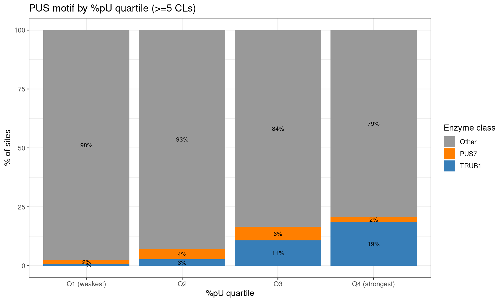
| Quartile | # sites | # TRUB1 | % TRUB1 | # PUS7 | % PUS7 | # known motif | % known motif | Median %pU |
|---|---|---|---|---|---|---|---|---|
| Q1 (weakest) | 528 | 4 | 0.8 | 8 | 1.5 | 12 | 2.3 | 0.033 |
| Q2 | 527 | 14 | 2.7 | 23 | 4.4 | 37 | 7.0 | 0.048 |
| Q3 | 527 | 57 | 10.8 | 30 | 5.7 | 87 | 16.5 | 0.124 |
| Q4 (strongest) | 527 | 98 | 18.6 | 11 | 2.1 | 109 | 20.7 | 0.590 |
1,083 sites
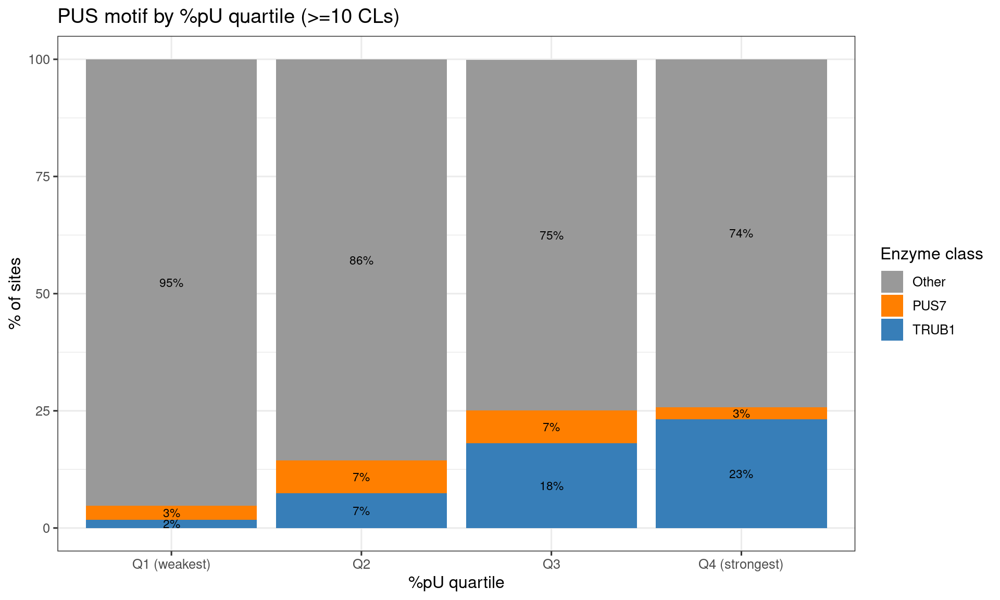
| Quartile | # sites | # TRUB1 | % TRUB1 | # PUS7 | % PUS7 | # known motif | % known motif | Median %pU |
|---|---|---|---|---|---|---|---|---|
| Q1 (weakest) | 271 | 5 | 1.8 | 8 | 3.0 | 13 | 4.8 | 0.042 |
| Q2 | 271 | 20 | 7.4 | 19 | 7.0 | 39 | 14.4 | 0.072 |
| Q3 | 270 | 49 | 18.1 | 19 | 7.0 | 68 | 25.2 | 0.188 |
| Q4 (strongest) | 271 | 63 | 23.2 | 7 | 2.6 | 70 | 25.8 | 0.690 |
bacs_bed <- bacs_mRNA %>%
mutate(chr_clean = sub("^chr", "", chr)) %>%
filter(chr_clean %in% names(genome))
bacs_seqs <- character(nrow(bacs_bed))
bacs_valid <- logical(nrow(bacs_bed))
for (i in seq_len(nrow(bacs_bed))) {
chr_name <- bacs_bed$chr_clean[i]
center <- as.integer(bacs_bed$pos[i])
st <- bacs_bed$strand[i]
chr_len <- length(genome[[chr_name]])
left <- center - flank
right <- center + flank
if (left < 1 || right > chr_len) next
s <- subseq(genome[[chr_name]], start = left, end = right)
if (st == "-") s <- reverseComplement(s)
bacs_seqs[i] <- as.character(s)
bacs_valid[i] <- TRUE
}
bacs_seqs <- bacs_seqs[bacs_valid]
cat("BACS valid sequences:", length(bacs_seqs), "out of", nrow(bacs_bed), "\n")BACS valid sequences: 1294 out of 1294 bacs_dna <- DNAStringSet(bacs_seqs)
bacs_9mer <- as.character(subseq(bacs_dna, start = center_idx - 2, end = center_idx + 6))
bacs_classes <- sapply(bacs_9mer, classify_pus, USE.NAMES = FALSE)bacs_freq_mat <- matrix(0, nrow = 4, ncol = seq_width,
dimnames = list(base_order, positions))
for (s in bacs_seqs) {
bases <- strsplit(s, "")[[1]]
for (j in seq_along(bases)) {
b <- toupper(bases[j])
if (b %in% base_order) bacs_freq_mat[b, j] <- bacs_freq_mat[b, j] + 1
}
}
bacs_freq_pct <- sweep(bacs_freq_mat, 2, colSums(bacs_freq_mat), "/") * 100
bacs_plot_df <- melt(bacs_freq_pct)
colnames(bacs_plot_df) <- c("Base", "Position", "Frequency")
bacs_plot_df$Position <- as.integer(as.character(bacs_plot_df$Position))
bacs_plot_df$Base <- factor(bacs_plot_df$Base, levels = base_order)
ggplot(bacs_plot_df, aes(x = Position, y = Base, fill = Frequency)) +
geom_tile(color = "white", linewidth = 0.3) +
geom_text(aes(label = sprintf("%.0f", Frequency)), size = 2.5) +
scale_fill_gradient2(low = "white", mid = "#ffffbf", high = "#d73027",
midpoint = 25, name = "% frequency") +
scale_x_continuous(breaks = positions) +
geom_vline(xintercept = 0, color = "black", linewidth = 0.8, linetype = "dashed") +
labs(title = sprintf("Nucleotide frequency — BACS sites (n = %d)", length(bacs_seqs)),
subtitle = sprintf("Position 0 = pU site (T→Ψ), ±%d bp flanking", flank),
x = "Position relative to pU site", y = NULL) +
theme_bw(base_size = 11) +
theme(panel.grid = element_blank())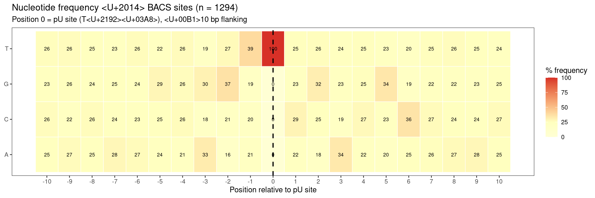
ggplot(bacs_plot_df, aes(x = factor(Position, levels = positions), y = Frequency, fill = Base)) +
geom_col(position = "stack") +
scale_fill_manual(values = c("A" = "#4DAF4A", "C" = "#377EB8",
"G" = "#FF7F00", "T" = "#E41A1C")) +
geom_vline(xintercept = which(positions == 0), color = "black",
linewidth = 0.8, linetype = "dashed") +
labs(title = sprintf("Nucleotide composition — BACS sites (n = %d)", length(bacs_seqs)),
subtitle = sprintf("Position 0 = pU site (T→Ψ), ±%d bp flanking", flank),
x = "Position relative to pU site", y = "% frequency") +
theme_bw(base_size = 11) +
theme(axis.text.x = element_text(size = 7))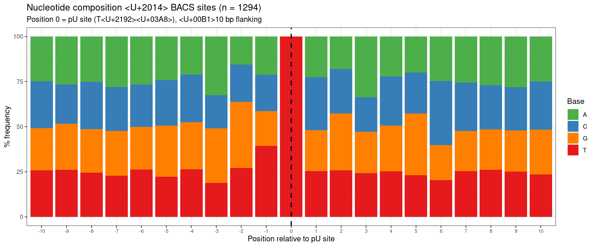
bacs_class_tab <- table(bacs_classes)
bacs_class_df <- data.frame(
Enzyme = names(bacs_class_tab),
Count = as.integer(bacs_class_tab),
Pct = round(as.integer(bacs_class_tab) / length(bacs_seqs) * 100, 1)
)
bacs_class_df <- bacs_class_df[order(-bacs_class_df$Count), ]
knitr::kable(bacs_class_df, row.names = FALSE,
col.names = c("Enzyme class", "# sites", "%"),
caption = "PUS classification — BACS sites")| Enzyme class | # sites | % |
|---|---|---|
| Other | 1104 | 85.3 |
| TRUB1 | 104 | 8.0 |
| PUS7 | 86 | 6.6 |
bacs_class_df$label <- sprintf("%s\n%d (%.0f%%)", bacs_class_df$Enzyme,
bacs_class_df$Count, bacs_class_df$Pct)
ggplot(bacs_class_df, aes(x = "", y = Count, fill = Enzyme)) +
geom_col(width = 1, color = "white") +
coord_polar(theta = "y") +
geom_text(aes(label = label), position = position_stack(vjust = 0.5), size = 4) +
scale_fill_manual(values = c("TRUB1" = "#377EB8", "PUS7" = "#FF7F00",
"Other" = "#999999")) +
labs(title = sprintf("PUS classification — BACS sites (n = %d)", length(bacs_seqs)),
fill = NULL) +
theme_void(base_size = 12)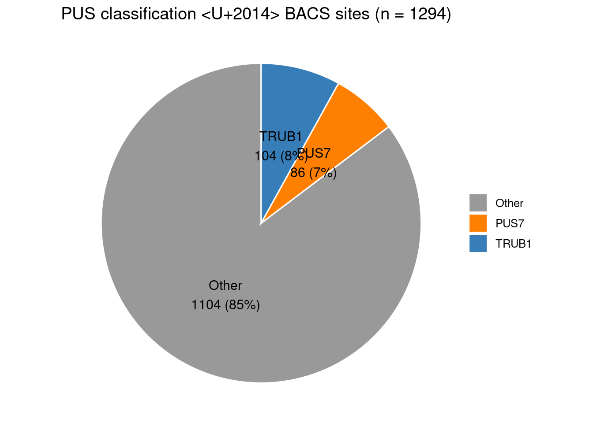
bacs_hm_plots <- Filter(Negate(is.null), list(
make_class_heatmap(bacs_seqs[bacs_classes == "TRUB1"], "TRUB1 (BACS)"),
make_class_heatmap(bacs_seqs[bacs_classes == "PUS7"], "PUS7 (BACS)"),
make_class_heatmap(bacs_seqs[bacs_classes == "Other"], "Other (BACS)")
))
if (length(bacs_hm_plots) > 0) wrap_plots(bacs_hm_plots, ncol = 1)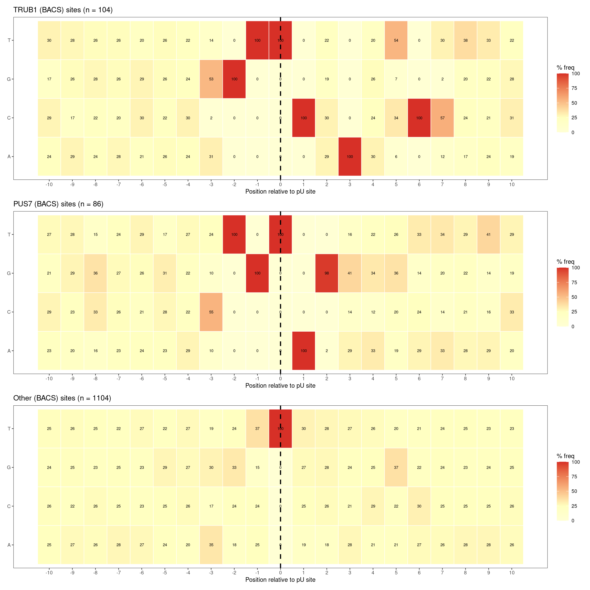
bacs_strength_df <- data.frame(
psi_level = bacs_mRNA$psi_level[bacs_valid],
class = bacs_classes,
is_known = bacs_classes %in% c("TRUB1", "PUS7")
)
bacs_strength_df$quartile <- cut(bacs_strength_df$psi_level,
breaks = quantile(bacs_strength_df$psi_level,
probs = c(0,.25,.5,.75,1), na.rm = TRUE),
include.lowest = TRUE,
labels = c("Q1 (weakest)", "Q2", "Q3", "Q4 (strongest)"))
bacs_q_summary <- bacs_strength_df %>%
filter(!is.na(quartile)) %>%
group_by(quartile, class) %>%
summarise(n = n(), .groups = "drop") %>%
group_by(quartile) %>%
mutate(pct = round(n / sum(n) * 100, 1))
ggplot(bacs_q_summary, aes(x = quartile, y = pct, fill = class)) +
geom_col(position = "stack") +
geom_text(aes(label = sprintf("%.0f%%", pct)),
position = position_stack(vjust = 0.5), size = 3) +
scale_fill_manual(values = c("TRUB1" = "#377EB8", "PUS7" = "#FF7F00",
"Other" = "#999999")) +
labs(title = "PUS motif composition by Ψ level quartile (BACS)",
x = "Ψ level quartile", y = "% of sites", fill = "Enzyme class") +
theme_bw(base_size = 12)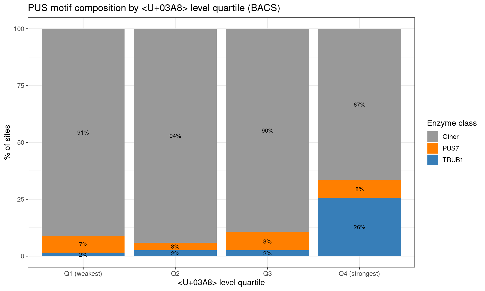
bacs_q_known <- bacs_strength_df %>%
filter(!is.na(quartile)) %>%
group_by(quartile) %>%
summarise(
n_sites = n(),
n_TRUB1 = sum(class == "TRUB1"),
pct_TRUB1 = round(sum(class == "TRUB1") / n() * 100, 1),
n_PUS7 = sum(class == "PUS7"),
pct_PUS7 = round(sum(class == "PUS7") / n() * 100, 1),
n_known = sum(is_known),
pct_known = round(sum(is_known) / n() * 100, 1),
median_psi = round(median(psi_level, na.rm = TRUE), 3),
.groups = "drop"
)
knitr::kable(bacs_q_known,
col.names = c("Quartile", "# sites", "# TRUB1", "% TRUB1",
"# PUS7", "% PUS7", "# known motif", "% known motif",
"Median Ψ level"),
caption = "PUS motif enrichment by Ψ level quartile (BACS)")| Quartile | # sites | # TRUB1 | % TRUB1 | # PUS7 | % PUS7 | # known motif | % known motif | Median <U+03A8> level |
|---|---|---|---|---|---|---|---|---|
| Q1 (weakest) | 324 | 5 | 1.5 | 24 | 7.4 | 29 | 9.0 | 0.058 |
| Q2 | 323 | 8 | 2.5 | 11 | 3.4 | 19 | 5.9 | 0.077 |
| Q3 | 323 | 8 | 2.5 | 26 | 8.0 | 34 | 10.5 | 0.113 |
| Q4 (strongest) | 324 | 83 | 25.6 | 25 | 7.7 | 108 | 33.3 | 0.269 |
We annotate each union pU site against the Ensembl v112 GTF with the
following priority (highest wins): CDS > 3’UTR > 5’UTR > ncRNA
exon > Intron > Intergenic. Pre-computed by
annotate_sites_feature.R.
anno_sites <- fread(
file.path(OUT_DIR, "union_mRNA.global_sites_annotated.txt.gz"),
header = TRUE, sep = "\t", colClasses = list(character = c("ref", "strand")))
anno_bacs <- fread(
file.path(JOINT_OUT_DIR, "bacs_mrna_annotated.txt.gz"),
header = TRUE, sep = "\t")
anno_sites$n_called <- global_sites$n_called[match(
paste(anno_sites$ref, anno_sites$pos, anno_sites$strand),
paste(global_sites$ref, global_sites$pos, global_sites$strand))]
feat_levels <- c("5UTR", "CDS", "3UTR", "ncRNA", "Intron", "Intergenic")
feat_colors <- c("5UTR" = "#4DAF4A",
"CDS" = "#377EB8",
"3UTR" = "#FF7F00",
"ncRNA" = "#984EA3",
"Intron" = "#A65628",
"Intergenic" = "#999999")bacs_feat_df <- data.frame(
feature = factor(anno_bacs$feature_anno, levels = feat_levels)
) %>%
count(feature) %>%
mutate(pct = round(n / sum(n) * 100, 1), dataset = "BACS")
for (cc in ncalled_cutoffs) {
idx <- which(anno_sites$n_called >= cc$min_cls)
n_sub <- length(idx)
cat(sprintf("\n\n### %s\n\n", cc$label))
cat(sprintf("**%s sites**\n\n", scales::comma(n_sub)))
if (n_sub < 10) { cat("Too few sites.\n\n"); next }
our_feat_df <- data.frame(
feature = factor(anno_sites$feature[idx], levels = feat_levels)
) %>%
count(feature) %>%
mutate(pct = round(n / sum(n) * 100, 1), dataset = cc$label)
plot_df <- bind_rows(our_feat_df, bacs_feat_df)
plot_df$dataset <- factor(plot_df$dataset, levels = c(cc$label, "BACS"))
plot_df$feature <- factor(plot_df$feature, levels = feat_levels)
print(
ggplot(plot_df, aes(x = dataset, y = pct, fill = feature)) +
geom_col(position = "stack", width = 0.6) +
geom_text(aes(label = sprintf("%.0f%%", pct)),
position = position_stack(vjust = 0.5), size = 3.5) +
scale_fill_manual(values = feat_colors, name = "Feature") +
labs(title = sprintf("Genomic feature distribution (%s)", cc$label),
x = NULL, y = "% of sites") +
theme_bw(base_size = 12) +
theme(legend.position = "right")
)
cat("\n\n")
}15,555 sites
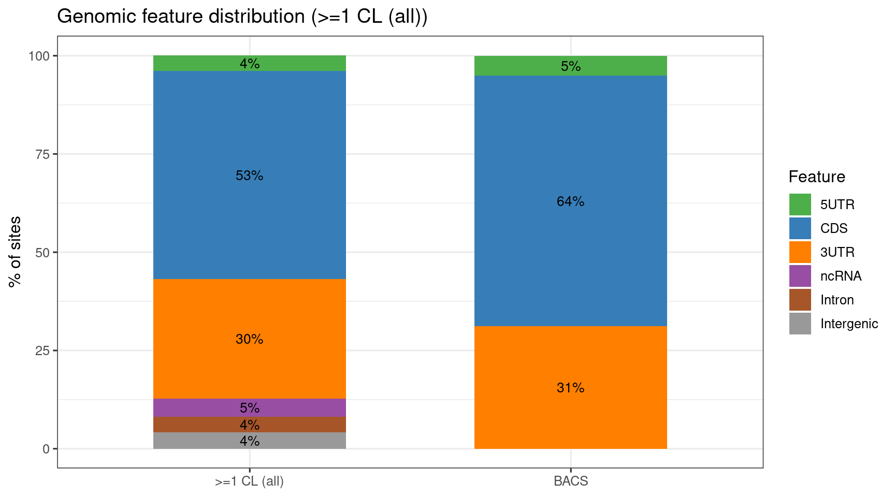
5,928 sites
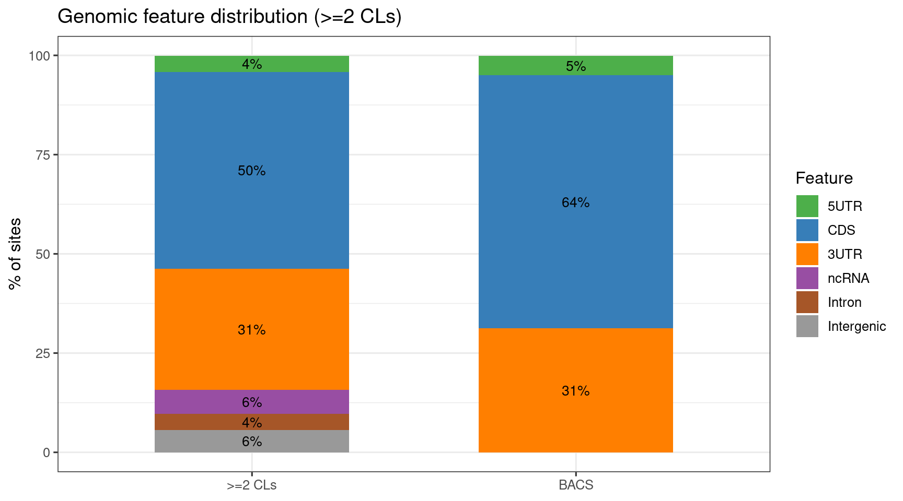
3,745 sites
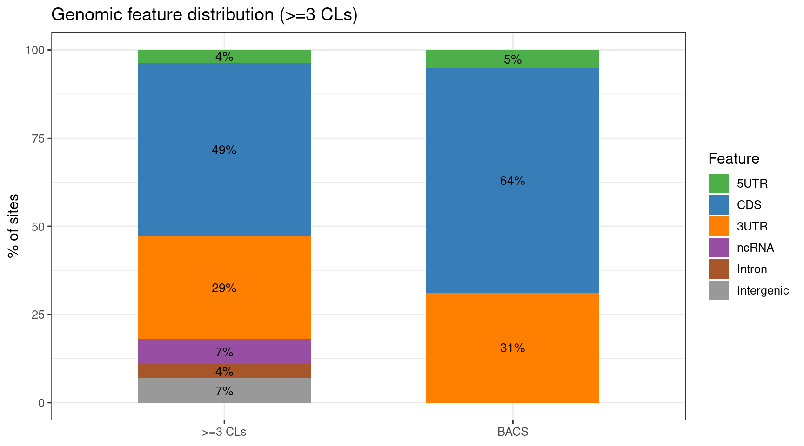
2,109 sites
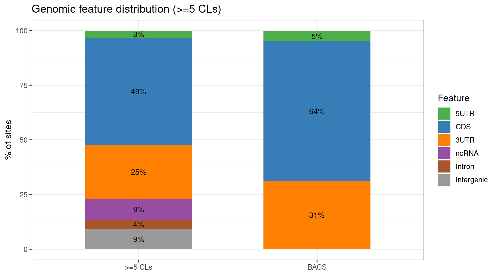
1,083 sites
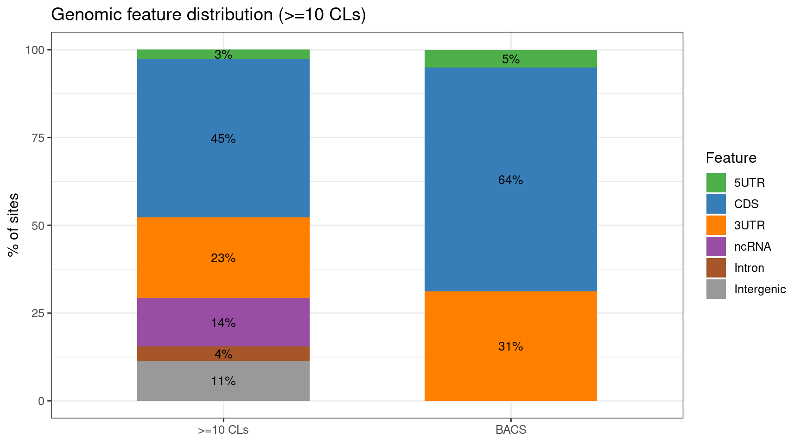
bacs_keys <- anno_bacs %>% select(chr, pos, strand)
utr_cds_table <- do.call(rbind, lapply(ncalled_cutoffs, function(cc) {
idx <- which(anno_sites$n_called >= cc$min_cls)
sub_utr_cds <- anno_sites[idx, ][anno_sites[idx, ]$feature %in% c("5UTR", "CDS", "3UTR"), ]
ov <- sub_utr_cds %>%
inner_join(bacs_keys, by = c("ref" = "chr", "pos", "strand"))
data.frame(
Threshold = cc$label,
n_utr_cds = nrow(sub_utr_cds),
n_overlap = nrow(ov),
pct_overlap = round(nrow(ov) / nrow(sub_utr_cds) * 100, 1)
)
}))
knitr::kable(utr_cds_table,
col.names = c("n_called threshold", "# UTR/CDS sites",
"# BACS overlap", "% overlap"),
caption = "% of UTR/CDS sites overlapping BACS, by n_called threshold")| n_called threshold | # UTR/CDS sites | # BACS overlap | % overlap |
|---|---|---|---|
| >=1 CL (all) | 13560 | 621 | 4.6 |
| >=2 CLs | 4994 | 510 | 10.2 |
| >=3 CLs | 3069 | 450 | 14.7 |
| >=5 CLs | 1626 | 382 | 23.5 |
| >=10 CLs | 767 | 277 | 36.1 |
utr_cds_table$Threshold <- factor(utr_cds_table$Threshold,
levels = rev(utr_cds_table$Threshold))
ggplot(utr_cds_table, aes(x = Threshold, y = pct_overlap)) +
geom_col(fill = "steelblue", width = 0.6) +
geom_text(aes(label = sprintf("%.1f%%", pct_overlap)), hjust = -0.1, size = 4) +
coord_flip(ylim = c(0, max(utr_cds_table$pct_overlap) * 1.15)) +
labs(title = "% of UTR/CDS sites overlapping BACS, by n_called threshold",
x = NULL, y = "% overlap with BACS") +
theme_bw(base_size = 12)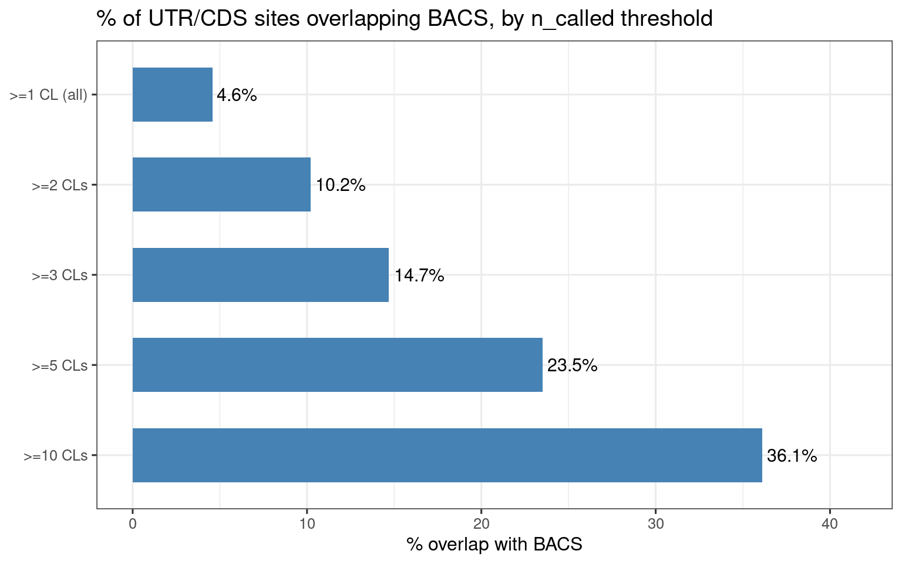
sessionInfo()R version 4.2.0 (2022-04-22)
Platform: x86_64-pc-linux-gnu (64-bit)
Running under: CentOS Linux 7 (Core)
Matrix products: default
BLAS/LAPACK: /software/openblas-0.3.13-el7-x86_64/lib/libopenblas_haswellp-r0.3.13.so
locale:
[1] C
attached base packages:
[1] stats4 stats graphics grDevices utils datasets methods
[8] base
other attached packages:
[1] reshape2_1.4.4 Biostrings_2.64.0 GenomeInfoDb_1.39.9
[4] XVector_0.36.0 IRanges_2.30.0 S4Vectors_0.34.0
[7] BiocGenerics_0.42.0 scales_1.4.0 corrplot_0.92
[10] patchwork_1.3.2.9000 ggplot2_4.0.3 stringr_1.5.1
[13] dplyr_1.1.4 data.table_1.14.2
loaded via a namespace (and not attached):
[1] Rcpp_1.0.12 lattice_0.20-45 rprojroot_2.0.3
[4] digest_0.6.29 utf8_1.2.2 plyr_1.8.7
[7] R6_2.5.1 cellranger_1.1.0 evaluate_0.15
[10] highr_0.9 pillar_1.9.0 zlibbioc_1.42.0
[13] rlang_1.1.2 readxl_1.4.0 rstudioapi_0.13
[16] jquerylib_0.1.4 R.utils_2.11.0 R.oo_1.24.0
[19] Matrix_1.5-3 rmarkdown_2.25 labeling_0.4.2
[22] splines_4.2.0 S7_0.2.0 RCurl_1.98-1.7
[25] compiler_4.2.0 httpuv_1.6.5 xfun_0.41
[28] pkgconfig_2.0.3 mgcv_1.8-40 htmltools_0.5.2
[31] tidyselect_1.2.0 GenomeInfoDbData_1.2.8 tibble_3.2.1
[34] workflowr_1.7.0 fansi_1.0.3 crayon_1.5.1
[37] withr_2.5.0 later_1.3.0 bitops_1.0-7
[40] R.methodsS3_1.8.1 grid_4.2.0 nlme_3.1-157
[43] jsonlite_1.8.0 gtable_0.3.6 lifecycle_1.0.4
[46] git2r_0.30.1 magrittr_2.0.3 cli_3.6.1
[49] stringi_1.7.6 farver_2.1.0 fs_1.5.2
[52] promises_1.2.0.1 bslib_0.3.1 generics_0.1.4
[55] vctrs_0.6.5 RColorBrewer_1.1-3 tools_4.2.0
[58] dichromat_2.0-0.1 glue_1.6.2 fastmap_1.1.0
[61] yaml_2.3.5 knitr_1.39 sass_0.4.1